{kind=link}
{kind=link}
{kind=link}
{kind=link}
{kind=link}
{kind=link}
{kind=link}
{kind=link}
{kind=link}
{kind=link}
{kind=link}
{kind=link}
{kind=link}
{kind=link}
{kind=link}
{kind=link}
{kind=link}
{kind=link}
{kind=link}
{kind=link}
{kind=link}
{kind=link}
{kind=link}
{kind=link}
{kind=link}
{kind=link}
{kind=link}
{kind=link}
{kind=link}
{kind=link}
{kind=link}
{kind=link}
{kind=link}
{kind=link}
{kind=link}
{kind=link}
{kind=link}
{kind=link}
{kind=link}
{kind=link}
{kind=link}
{kind=link}
{kind=link}
{kind=link}
{kind=link}
{kind=link}
{kind=link}
{kind=link}
{kind=link}
{kind=link}
细胞与实验
单细胞转录组
single-cell RNA sequencing
先用一句话理解
分别记录不同细胞中检测到的 RNA 信号，用于观察细胞间差异。
放到例子里
本例把骨髓中不同细胞排为矩阵的不同记录。
在本课里有什么用
连接计数、聚类和类型注释。
容易混淆的地方
观测不到某 RNA 不等于该细胞绝不会表达。
也可这样查：单细胞转录组、single-cell RNA sequencing
固定人类骨髓案例；真实结果与原理示意分开标明。交互实验请在地图中使用，本页保留说明与自测解析。
00
骨髓包含红系、髓系、淋巴系和不同状态的细胞。把整个组织平均成一列，可以看到整体表达，却可能掩盖少数群体。单细胞转录组尝试把来自不同条码的 RNA 计数分开，让我们观察群体组成和细胞之间的差异。
本例是两个编号为 s1d1、s1d3 的人类骨髓输入。编号本身不能证明谁是健康、疾病、处理或对照；本课不会根据名字补出这些实验背景。原始导入为 17,125 个细胞、36,601 个基因，基础过滤后主线为 17,041 个细胞、23,427 个基因。
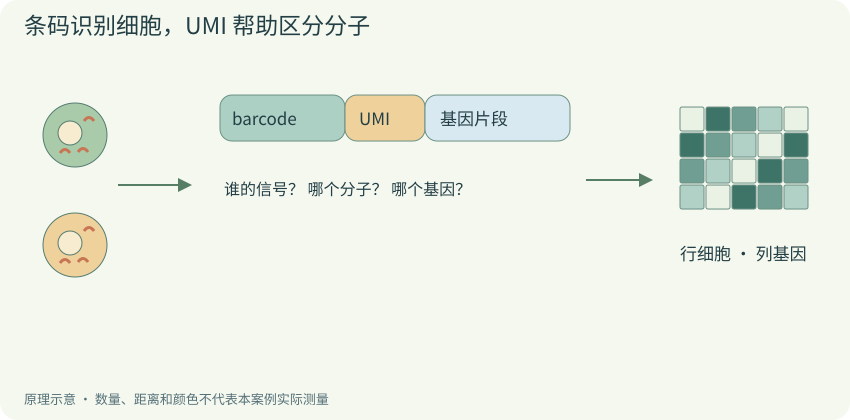
小屏可横向查看，也可放大阅读。
一个样本内有许多细胞。同一样本的细胞共享供体、取材和处理等因素，它们不是等量增加的独立生物学重复。UMAP 上点很多，有助于看到细胞异质性，却不能自动增强一个只有少数供体的条件比较。
我们从已经生成的 counts 开始，并没有在这里重新做 FASTQ 比对和细胞识别。基因表达是转录本丰度的观测，不能直接当蛋白量、细胞活性或瞬时转录速度。
把课程解压到最终位置，阅读环境准备说明，再让 AI 按 99 指南检查环境、项目身份、物种、组织、样本、捕获文库和原始计数来源。使用自己的数据时还要核对基因 ID、marker 和模型范围。
历史 tutorial_example 是固定参考。真正练习应另建项目，课件、候选、选择和报告都保存在自己的目录。不要直接改历史案例来制造新报告。
这份海岛教程是一份自带素材的课程，离线打开也能读。结果网页读取你当前项目的真实输出，会随运行和刷新变化。教程的已读进度不是分析完成状态；点开建筑和自测都不会启动计算。
接下来要先理解：一个细胞为什么占矩阵的一行？零到底意味着什么？这些问题决定后面每一种图该怎么读。
本课 UMAP 的点是细胞；每个样本包含许多细胞，细胞不能冒充独立生物学重复。
01
AnnData 的 X 通常按“行是细胞、列是基因”排列。每个格子记录该细胞该基因的数值，数值的含义取决于当前处理阶段。原始 counts、总量归一化值、log1p 和 z-score 都可以是数值矩阵，但不能互相冒充。
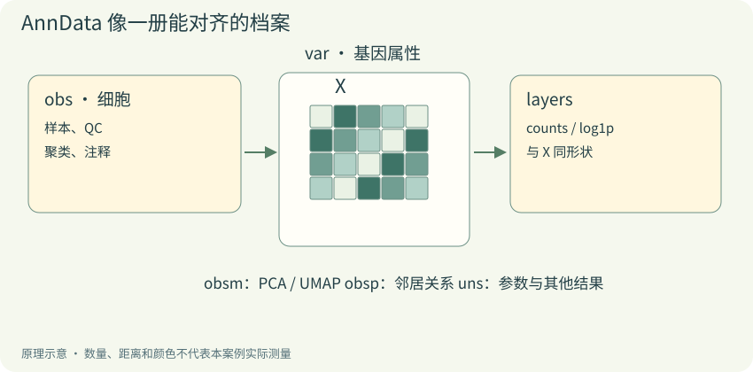
小屏可横向查看，也可放大阅读。
obs 保存与细胞逐行对应的信息，例如样本、QC、聚类和注释；var 保存基因属性，例如基因名、线粒体标记和高变基因。layers 保存与 X 同形状的另一种表达层。obsm 放 PCA/UMAP 这类每个细胞的低维坐标，obsp 放细胞之间的图关系，uns 放参数、颜色和不规则结果。
raw 是一个快照容器，名字不保证其中一定是原始计数。导入 H5AD 时，AI 必须核实原始 counts 来自 X、raw 还是明确层，并记录来源，而非仅凭整数值作结论。
历史主线从两个 10x H5 导入：s1d1 有 8,785 枚细胞，s1d3 有 8,340 枚细胞。合并时保留样本来源，核对细胞 ID 唯一性和基因对应关系；同一个条码在不同文库可能重复，条码字符串本身不是跨样本唯一身份。
基因交集决定合并后的列。不同物种、参考注释或 feature 类型不能仅按看似相同的行号相拼。读取完成先检查 n_obs、n_vars、样本计数与计数层，再进入 QC。
零表示在这个观测中没有记录到该基因的分子，不足以证明该细胞在生物学上绝不表达。RNA 数量、捕获效率、测序深度与技术过程都会影响是否检出。稀疏存储只省略零元素的存储，不能理解成丢失了所有零的信息。
如果输入缺失、物种不明、样本关系不明，或 counts 无法追溯，先说明检查了哪些文件以及缺少的确切信息。数据导入成功不等于科学信息核验完成。
obs 对齐细胞，var 对齐基因；layers 与 X 共享细胞×基因维度。
02
基础 QC 关注每个细胞的总 counts、检出基因数，以及特定基因集合的计数比例。它们帮助发现需要检查的细胞，但没有哪个指标单独等价于“好细胞”或“坏细胞”。骨髓中的红系信号尤其不能简单当污染。
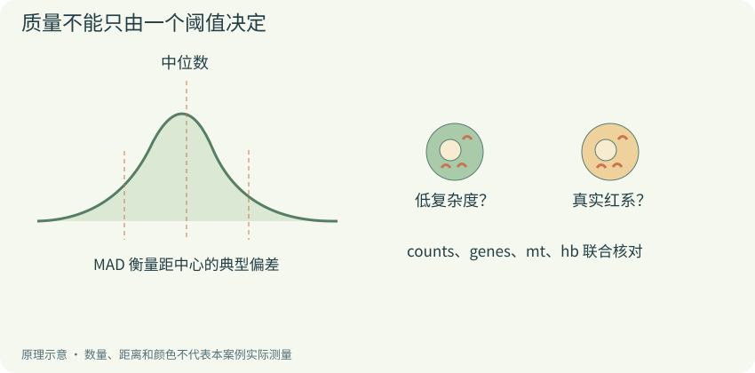
小屏可横向查看，也可放大阅读。
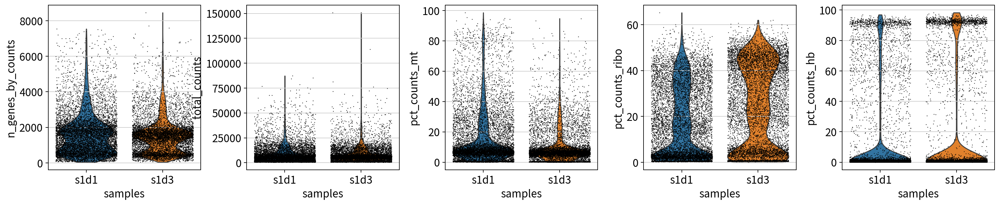
读图详解 · 按自己的节奏往下读
sc.pl.violin；当前图是在基础过滤之前计算的 QC 指标。 每个小提琴对应一个样本内某项细胞 QC 指标的分布，细散点是一枚细胞；同一细胞参与多个指标面板。
来源为 s1d1、s1d3 合并的历史案例。这是基础过滤前的 17,125 枚细胞，QC 指标按原始计数计算。
颜色区分样本；琴身宽度表示该纵轴附近的分布密度，并不直接表示总细胞数。离散散点带抖动，横向位置没有额外生物学含义。
从中部最宽的位置看典型范围，再看上尾与低端。把同一样本的多个面板联系起来：高线粒体比例是否伴随低复杂度？再对照散点图与每样本保留数量。
两个样本原始合并后共 17,125 个细胞。先比较各面板的量纲；骨髓中红系群体可使血红蛋白比例具有生物学意义。
高血红蛋白比例在骨髓中可能来自真实红系细胞。各样本图形不同也不等于一个必须删除；阈值需结合组织和建库信息。
横轴为 samples（s1d1、s1d3）；各面板纵轴分别是检出基因数、总 counts、线粒体/核糖体/血红蛋白基因计数百分比。后面三项单位是 %，不能与 counts 共用刻度。
颜色区分样本；琴身宽度表示该纵轴附近的分布密度，并不直接表示总细胞数。离散散点带抖动，横向位置没有额外生物学含义。
从中部最宽的位置看典型范围，再看上尾与低端。把同一样本的多个面板联系起来：高线粒体比例是否伴随低复杂度？再对照散点图与每样本保留数量。
读图详解 · 按自己的节奏往下读
sc.pl.scatter 使用同一套过滤前 QC 指标；过滤只改变所选细胞/基因对象。 一个点是一枚细胞，所有点来自同一阶段的合并对象。图将两个测序复杂度指标与线粒体比例放在一起。
来源为 s1d1、s1d3 合并的历史案例。这是基础过滤前的 17,125 枚细胞，QC 指标按原始计数计算。
横轴 total_counts 是原始 UMI counts 总量；纵轴 n_genes_by_counts 是检出基因数。横纵轴都不是样本编号，也不是归一化后的表达。
颜色由 pct_counts_mt 控制，数值单位 %；必须按本图色条读高低。本案例使用的颜色方向与常见默认 viridis 不同，不能凭“黄就是高”判断。
先看总体上升关系，再查左下低复杂度细胞与高计数尾部，最后沿色条定位高线粒体比例点。前后图要配合 cell_retention 表而非仅凭视觉估算删了多少。
左下角聚集许多计数与基因数较低的细胞，少数细胞形成高 counts 尾部；需要与线粒体色条一起读。
横轴 total_counts 是原始 UMI counts 总量；纵轴 n_genes_by_counts 是检出基因数。横纵轴都不是样本编号，也不是归一化后的表达。
颜色由 pct_counts_mt 控制，数值单位 %；必须按本图色条读高低。本案例使用的颜色方向与常见默认 viridis 不同，不能凭“黄就是高”判断。
先看总体上升关系，再查左下低复杂度细胞与高计数尾部，最后沿色条定位高线粒体比例点。前后图要配合 cell_retention 表而非仅凭视觉估算删了多少。
基础规则移除检出基因少于 100 的细胞，以及少于 3 个细胞检出的基因。本次记录显示减少 84 个细胞；最终主线仍保留高线粒体比例的部分细胞。课件展示 mt 与 MAD 方法，并不代表历史运行开启了它们，图注必须以参数和实际结果为准。
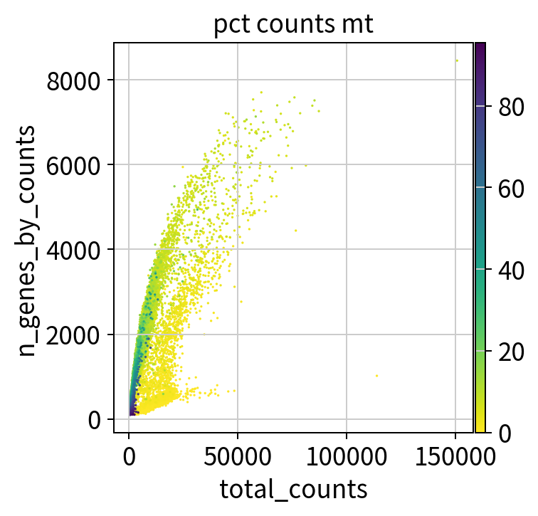
cell_retention 表显示 s1d1 为 8,785→8,713，s1d3 为 8,340→8,328，共减少 84 枚细胞；不是所有高 mt 细胞都被删除。
读图详解 · 按自己的节奏往下读
横轴 total_counts 是原始 UMI counts 总量；纵轴 n_genes_by_counts 是检出基因数。横纵轴都不是样本编号，也不是归一化后的表达。
颜色由 pct_counts_mt 控制，数值单位 %；必须按本图色条读高低。本案例使用的颜色方向与常见默认 viridis 不同，不能凭“黄就是高”判断。
先看总体上升关系，再查左下低复杂度细胞与高计数尾部，最后沿色条定位高线粒体比例点。前后图要配合 cell_retention 表而非仅凭视觉估算删了多少。
cell_retention 表显示 s1d1 为 8,785→8,713，s1d3 为 8,340→8,328，共减少 84 枚细胞；不是所有高 mt 细胞都被删除。
横轴 total_counts 是原始 UMI counts 总量；纵轴 n_genes_by_counts 是检出基因数。横纵轴都不是样本编号，也不是归一化后的表达。
颜色由 pct_counts_mt 控制，数值单位 %；必须按本图色条读高低。本案例使用的颜色方向与常见默认 viridis 不同，不能凭“黄就是高”判断。
先看总体上升关系，再查左下低复杂度细胞与高计数尾部，最后沿色条定位高线粒体比例点。前后图要配合 cell_retention 表而非仅凭视觉估算删了多少。
新版从相同基础对象建立独立候选，比较分样本保留比例、指标分布和候选交集，再由用户确认。MAD 以中位数为中心，用绝对偏差的中位数衡量稳健分散程度；本课程的 MAD 候选在有 mt 指标时还包含 mt 上限，并非完全不使用线粒体信息。
如果某组 MAD 为零，规则需要明确处理，不能让微小浮点差异决定所有细胞去留。阈值也不能跨物种照抄：人类 MT- 前缀不是任何物种的通用规则。
仅对历史 cell_qc 表按当前百分比重新计数；不等于执行完整 QC、MAD 或双细胞流程，也不会改变原图和正式结果。
展示每条候选保留多少、哪些样本受影响、被排除细胞有什么共同特征，以及为何推荐某条。不能先问“用哪种算法”再让学生盲选。选择后只有该候选成为下游主对象，其余证据仍保留。
保留比例、指标分布、真实组织与实验设计共同决定解释，模板参数不能保证适合新数据。
02
若两枚细胞共享一个捕获单位，它们的 RNA 信号可能合并到一个条码里。来自不同谱系的混合可能更容易识别；同类细胞混合通常更难区分。高 counts 是线索，不是足够的判定条件。
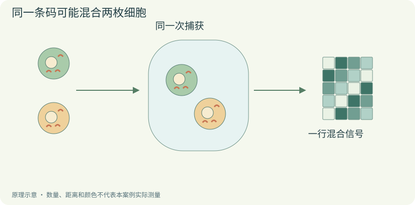
小屏可横向查看，也可放大阅读。
它通过模拟混合表达并比较邻域关系，为真实条码计算 doublet_score，随后按规则产生 predicted_doublet。模拟分布、预期双细胞率、细胞组成与测序质量会影响结果。不能把模拟混合简单理解成肉眼数两倍 counts。
同一次捕获文库才是关键单位。一个样本拆成两个测序 lane 不等于两次捕获；不同捕获混在一起也不应随便共用预测模型。历史教程按 samples 运行，新的项目先让 AI 核对 capture_library。
历史主线预测 213 枚并保留标记；因此可以在后续聚类图中查看它们落在什么位置。这里展示第 06 章的复核图，明确它是后续视角，不假装第 02 章已经有 UMAP。
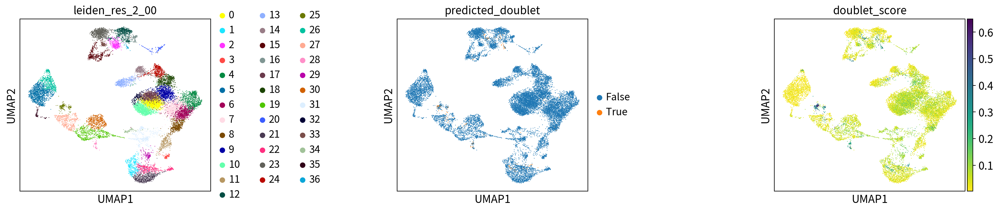
读图详解 · 按自己的节奏往下读
Scrublet 按 samples 运行的历史案例；新数据必须按真实 capture_library 核对捕获关系。 左图为较细聚类；中图将同一批细胞的 predicted_doublet 布尔标签上色；右图是对应连续 doublet_score。
全部面板共用 UMAP1/UMAP2；右侧色条数值是算法分数，不是百分比细胞数。
中间 True/False 是预测类别，右侧连续分数与分类标签不同，阈值把连续值分成预测类别。
历史 QC 检出 213 个预测双细胞，主线没有删除；在后续 UMAP 中仍可查看其分布。
213 个预测双细胞在历史主线保留并标记，不等于实验验证的 213 个双细胞。不能把某簇整体删除仅因为均值较高。
全部面板共用 UMAP1/UMAP2；右侧色条数值是算法分数，不是百分比细胞数。
中间 True/False 是预测类别，右侧连续分数与分类标签不同，阈值把连续值分成预测类别。
先找预测点集中在哪些簇，再结合计数、marker 共表达及每个捕获文库的预测比例，检查是否由某类真实细胞主导。
新版在所选 QC 对象上比较保留标记与删除预测的数量影响，向用户报告后确认。若决定保留，应在解释特定混合群体时继续核对；若删除，也不能说剩余对象必然无双细胞。算法标签不替代实验真值。
预测有漏检和误判，分数、预期率、捕获单位和谱系证据都需要一起检查。
03
两个细胞总 counts 不同，可能来自 RNA 含量、捕获效率或测序深度。总量归一化将每个细胞按自身总量缩放到共同目标，减少规模差异；它不能辨别所有差异究竟是技术还是生物学，也不能恢复真实绝对 RNA 分子数。
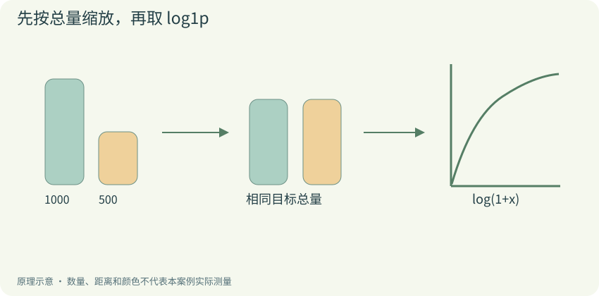
小屏可横向查看，也可放大阅读。
代码调用 normalize_total(target_sum=None)，目标为处理时细胞总 counts 中位数，历史摘要记录 5,853。某些原注释提到 10,000，是常见可选设置，不是本次执行值。归一化后再做 log1p，也就是自然对数 log(1+x)。
总量相同时，一个基因占比更高就会影响其他基因的相对份额。因此相对表达下降不能自动翻译成绝对分子数下降。生物学整体转录规模不同的群体还需要更谨慎地解释。
counts 层留给需要原始计数的方法，log1p 层供本课多种探索和 marker 检验使用。scaled 层用于特定绘图或处理，是另外的数值口径；不能将负 z-score 写回 counts。
假设某基因计数为 10，细胞总计数为 1,000，目标为 5,853：缩放值为 58.53，log1p 后约为 4.086。这个演算只是示意，不是某个真实细胞的测量。另一个细胞即使相同原始基因计数，总量不同也会得到不同归一化值。
检查细胞、基因维度没有意外改变，counts 与 log1p 都存在，并核对归一化目标和原始总量分布。log1p 不保证数据变成正态分布，后续方法仍需遵循自身假设。
历史实际目标为 5853；课件中提到 1e4 的示例不是本次实际参数。
03
有的基因在所有细胞中接近，有的随细胞类型或状态明显改变。高变基因筛选寻找相对于表达丰度更有变化的特征，让降维聚焦于有信息的方向。技术噪声也可能高变，因此“高变”不是生物学重要性的证明。
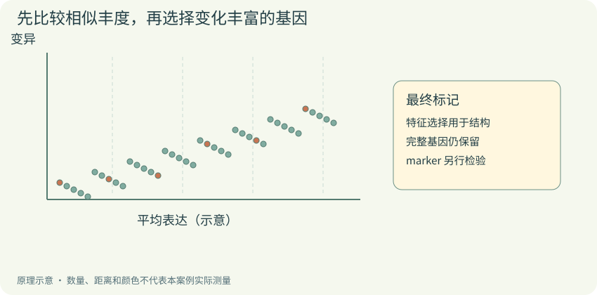
小屏可横向查看，也可放大阅读。
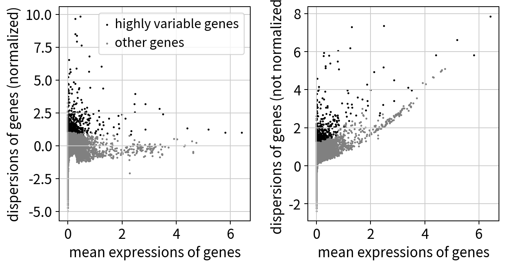
读图详解 · 按自己的节奏往下读
默认 seurat flavor，n_top_genes=2000，batch_key=samples；输入 log1p。 一个点是一个基因，左右图展示同一批基因；深色标记是按当前规则选中的高变基因。
来源为 s1d1、s1d3 合并的历史案例。主线对象保留 17,041 枚细胞、23,427 个基因；图中只展示指定 marker、主成分或群体汇总，不能据展示元素数反推完整对象维度。
横轴为方法计算的基因平均表达指标 means；左纵轴 dispersions_norm，右纵轴 dispersions。它们是特征选择统计量，不是细胞数或 log2FC。
先比较右图的均值与离散度关系，再看左图校正这条关系后的相对变异。不要只按最高均值挑基因；结合 highly_variable_genes.csv 的最终布尔列。
最终选择 2,000 个高变基因，但完整对象保留 23,427 个基因，方便后续检查未入选的 marker。
高变基因不是显著差异基因，也不是已经证明的 marker。batch_key 会影响合并排名，不能把方法简单说成只取两个样本的交集。
横轴为方法计算的基因平均表达指标 means；左纵轴 dispersions_norm，右纵轴 dispersions。它们是特征选择统计量，不是细胞数或 log2FC。
图例区分 highly variable genes 与 other genes；归一化离散度可为负，含义是在表达分箱内低于参照水平，不是负 counts。
先比较右图的均值与离散度关系，再看左图校正这条关系后的相对变异。不要只按最高均值挑基因；结合 highly_variable_genes.csv 的最终布尔列。
本次按 samples 评估高变信号，再按所用 flavor 的规则合并排名，最终选择 2,000 个基因。它不是一句“两个样本取交集”就能准确概括；需要看 highly_variable、highly_variable_nbatches 等实际列。
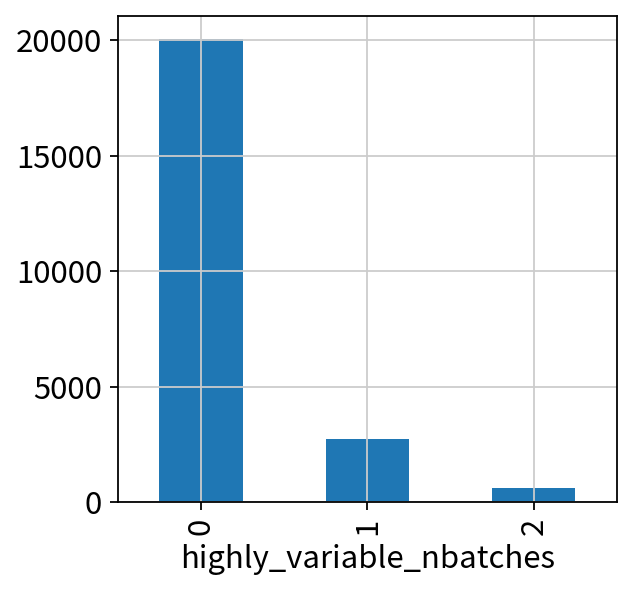
本案例只有 s1d1、s1d3 两个样本，因此横轴最多为 2；具体频数可在 highly_variable_genes 表复算。
读图详解 · 按自己的节奏往下读
value_counts 汇总 highly_variable_nbatches，保持完整基因表。 一根柱统计具有相应 highly_variable_nbatches 值的基因数量。每个基因只归入一个计数类别。
横轴 0/1/2 表示该基因在几个样本中入选该样本的高变集合；纵轴是基因数。横轴不是聚类号。
柱色相同，没有额外样本分组；柱高是统计数量。nbatches=0 的基因也可保留在完整对象中。
先比较只在一个样本与两个样本都入选的基因，再到最终 highly_variable 列核对哪些进入本次 2000 基因集合。
本案例只有 s1d1、s1d3 两个样本，因此横轴最多为 2；具体频数可在 highly_variable_genes 表复算。
不能把所有非零 nbatches 加起来当作最终高变基因数。最终选择还受排序和 n_top_genes 限制。
横轴 0/1/2 表示该基因在几个样本中入选该样本的高变集合；纵轴是基因数。横轴不是聚类号。
柱色相同，没有额外样本分组；柱高是统计数量。nbatches=0 的基因也可保留在完整对象中。
先比较只在一个样本与两个样本都入选的基因，再到最终 highly_variable 列核对哪些进入本次 2000 基因集合。
主对象仍保留 23,427 个基因。某个经典 marker 没进入高变集合，不妨碍后面检查其表达。把 X 直接裁成高变子集而又没有保留完整层，会让后面的注释证据缺失；本课维持完整基因对象，并用高变标记指导结构分析。
接下来 PCA 使用这些特征寻找主要变化方向；图形分开是否代表真实类型，还要用不依赖单个高变选择的 marker 和 QC 继续验证。
高变筛选不使用完整的类型证据，不能替代差异分析或注释。
04
每个细胞原本有成千上万个基因维度。PCA 寻找线性组合，按解释变异从大到小排列；邻居图用选定表示定义局部相似关系，UMAP 再尝试把局部结构放到二维。t-SNE 提供另一种非线性观察窗口。
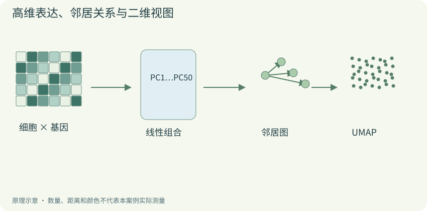
小屏可横向查看，也可放大阅读。
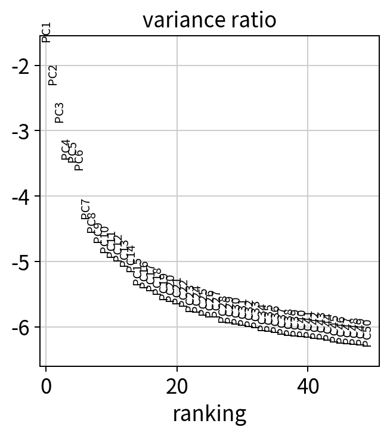
第一 PC 的原比例为 0.19577396，约 19.58%；前十 PC 合计约 48.60%。图中负刻度来自对数显示。
读图详解 · 按自己的节奏往下读
sc.pl.pca_variance_ratio(n_pcs=50, log=True)。 每个带编号的点对应一个主成分，按解释变异由大到小排列。
横轴 ranking 表示主成分次序，图内序号与 pca_variance.csv 的 PC 列核对；纵轴是解释比例的对数显示，因为代码指定 log=True，不是负的解释百分比。
黑色编号标记主成分；此图没有细胞类别颜色。
先看前几个点下降最快的部分，再看后部趋缓；使用原表累加真实 variance_ratio，不能把图上的负数直接相加。
第一 PC 的原比例为 0.19577396，约 19.58%；前十 PC 合计约 48.60%。图中负刻度来自对数显示。
拐点提供参考，不能单靠它决定唯一正确的 PC 数。更多 PC 也可能带入技术变异。
横轴 ranking 表示主成分次序，图内序号与 pca_variance.csv 的 PC 列核对；纵轴是解释比例的对数显示，因为代码指定 log=True，不是负的解释百分比。
黑色编号标记主成分；此图没有细胞类别颜色。
先看前几个点下降最快的部分，再看后部趋缓；使用原表累加真实 variance_ratio，不能把图上的负数直接相加。
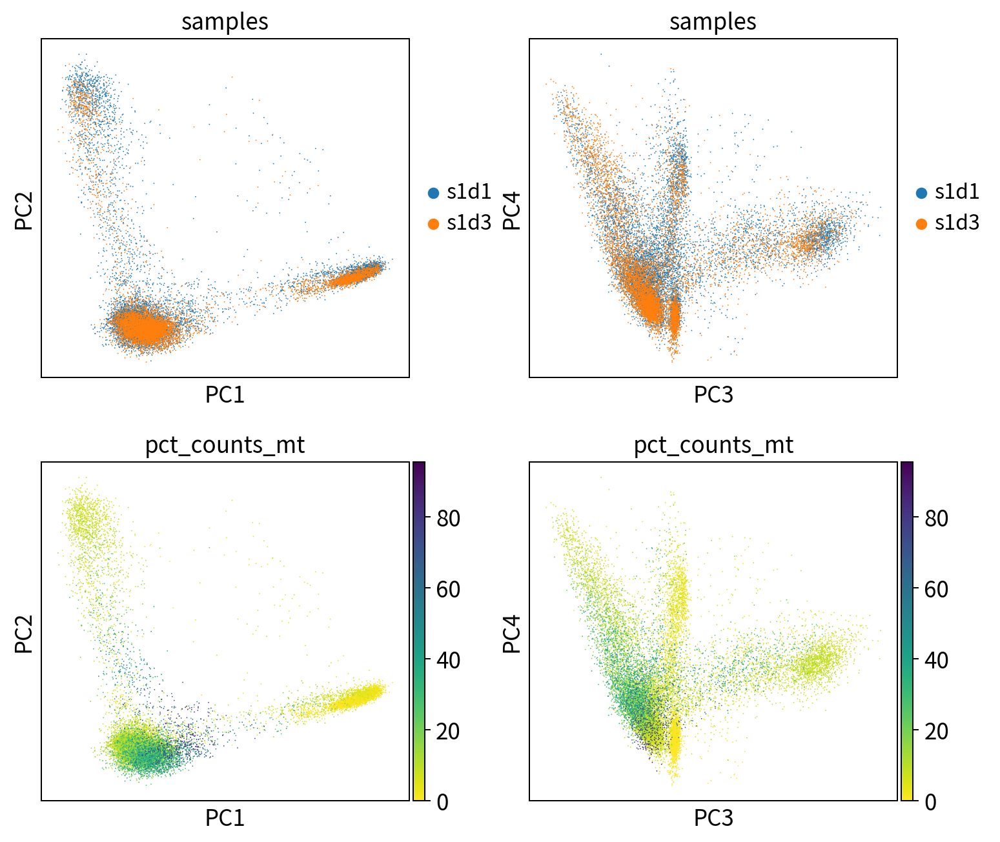
上排分别展示两对主成分，下排用相同坐标查看 pct_counts_mt。将样本颜色与 QC 分布对照，而不是把 PC1 高直接称为表达更高。
读图详解 · 按自己的节奏往下读
横纵轴为 PC1/PC2，或分面标题指定的 PC3/PC4；它们是多基因表达组合的投影分数，没有 UMI 单位。
samples 面板用离散颜色；pct_counts_mt 面板用连续色条。多个面板不是独立实验重复。
先按样本检查主要结构，再在相同坐标的 QC 面板定位高线粒体区域；另外一对 PC 展示不同方向的信息。
上排分别展示两对主成分，下排用相同坐标查看 pct_counts_mt。将样本颜色与 QC 分布对照，而不是把 PC1 高直接称为表达更高。
按样本分离可能混合技术批次、组织组成和真实差异；需要实验设计证据才能解释为批次效应。
横纵轴为 PC1/PC2，或分面标题指定的 PC3/PC4；它们是多基因表达组合的投影分数，没有 UMI 单位。
samples 面板用离散颜色；pct_counts_mt 面板用连续色条。多个面板不是独立实验重复。
先按样本检查主要结构，再在相同坐标的 QC 面板定位高线粒体区域；另外一对 PC 展示不同方向的信息。
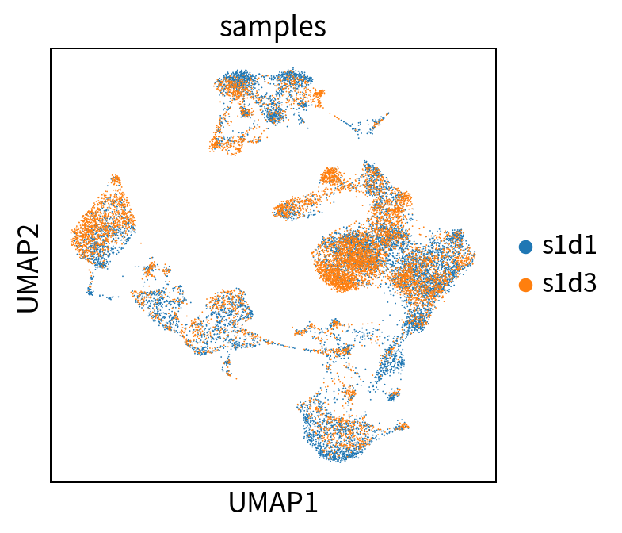
本例 17,041 个细胞用两个样本色展示。此时还没有依据这张图直接给每团命名。
读图详解 · 按自己的节奏往下读
UMAP1/UMAP2 是二维嵌入坐标，没有浓度、细胞数或时间单位。坐标正负与原点没有固定生物学含义。
离散标签看分类图例，连续指标看色条。多面板可用不同颜色编码同一批坐标。
先查点代表的对象和标题，再看群体内部混合及边缘，最后回到 marker 和 QC 表检验看似分开的群体。
本例 17,041 个细胞用两个样本色展示。此时还没有依据这张图直接给每团命名。
远处两团之间的距离和空白不直接量化谱系距离；图形旋转、压缩、朝向不代表生物学反转。
UMAP1/UMAP2 是二维嵌入坐标，没有浓度、细胞数或时间单位。坐标正负与原点没有固定生物学含义。
离散标签看分类图例，连续指标看色条。多面板可用不同颜色编码同一批坐标。
先查点代表的对象和标题，再看群体内部混合及边缘，最后回到 marker 和 QC 表检验看似分开的群体。
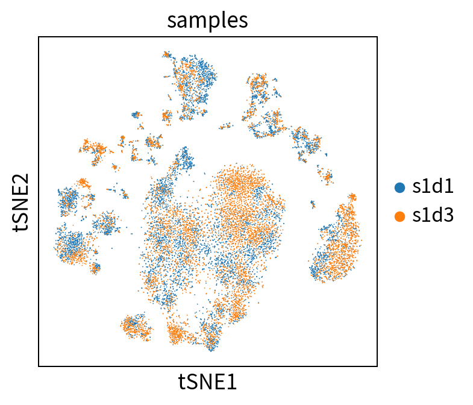
读图详解 · 按自己的节奏往下读
sc.tl.tsne 与 sc.pl.tsne；方法设置见历史第 04 章。 一个点是一枚细胞，颜色为来源样本；与 PCA、UMAP 展示相同对象但使用另一种布局方法。
tSNE1/tSNE2 没有表达量单位；坐标尺度与 UMAP/PCA 不可相互换算。
samples 分类色仅表示 s1d1 或 s1d3，不代表优劣或细胞类型。
看局部细胞群和样本组成，与 UMAP 中的 marker 线索交叉核对，避免逐像素匹配两种布局。
两种样本色在多个团块共存，也有比例不同的区域。其轮廓与 UMAP 不同，是不同嵌入方法的表现。
团块面积和团块间距离不适合直接推断细胞数量与发育关系。t-SNE 图分开不等于检验显著。
tSNE1/tSNE2 没有表达量单位；坐标尺度与 UMAP/PCA 不可相互换算。
samples 分类色仅表示 s1d1 或 s1d3，不代表优劣或细胞类型。
看局部细胞群和样本组成，与 UMAP 中的 marker 线索交叉核对，避免逐像素匹配两种布局。
坐标朝向、空白距离和岛屿面积不等于生物学变量；图中一团更大也不一定细胞更多。对一处特殊结构，应询问其样本组成、QC、marker 和邻居参数。每次改变 PC、邻居图或随机设置后，图形也可能变化。
这一站常规按课件推进。发现异常或准备改变参数时，AI 先说明现象及后续影响；不要为了让图好看而隐瞒样本关系。
二维嵌入是探索工具，距离、空白和方向不能直接解释成发育或因果。
05
技术批次与生物学差异都可能使样本分开。如果处理条件与批次完全重合，仅凭计算难以拆分二者。样本编号是身份列，不自动证明存在需要校正的技术批次。
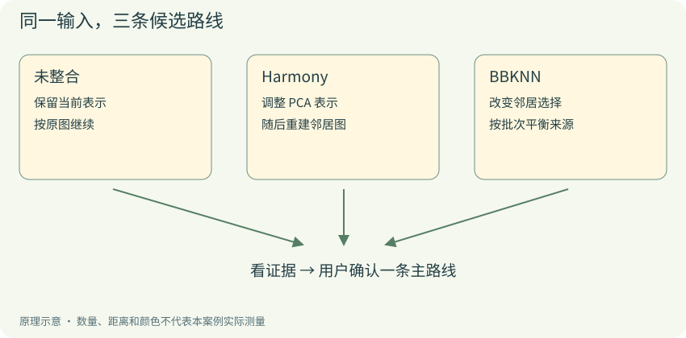
小屏可横向查看，也可放大阅读。
未整合保留原邻居关系；Harmony 在表示空间调整批次相关结构，再重建邻居图；BBKNN 在选邻居时平衡批次来源。它们不会因此给我们一个“去批次后的真实原始 counts”。
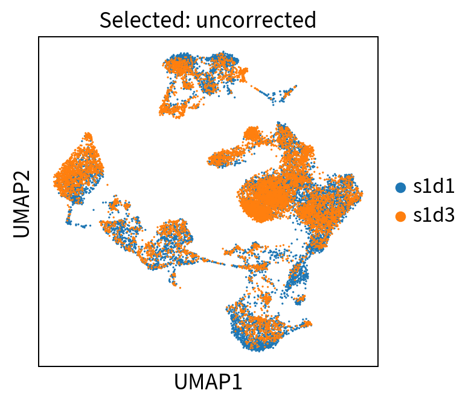
读图详解 · 按自己的节奏往下读
UMAP1/UMAP2 是二维嵌入坐标，没有浓度、细胞数或时间单位。坐标正负与原点没有固定生物学含义。
离散标签看分类图例，连续指标看色条。多面板可用不同颜色编码同一批坐标。
先查点代表的对象和标题，再看群体内部混合及边缘，最后回到 marker 和 QC 表检验看似分开的群体。
标题明确写 Selected: uncorrected，summary 中也记录该路线。不要因教程展示了 Harmony/BBKNN 就误以为最终使用它们。
远处两团之间的距离和空白不直接量化谱系距离；图形旋转、压缩、朝向不代表生物学反转。
UMAP1/UMAP2 是二维嵌入坐标，没有浓度、细胞数或时间单位。坐标正负与原点没有固定生物学含义。
离散标签看分类图例，连续指标看色条。多面板可用不同颜色编码同一批坐标。
先查点代表的对象和标题，再看群体内部混合及边缘，最后回到 marker 和 QC 表检验看似分开的群体。
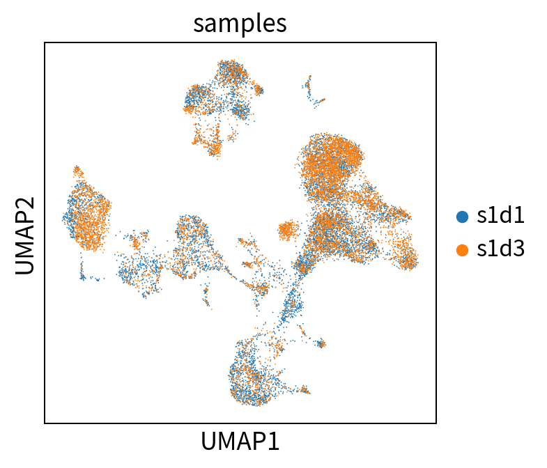
读图详解 · 按自己的节奏往下读
从当前邻居图计算 UMAP；随机种子、PC 与邻居设置都影响布局。 每个点是一枚细胞，相近表示在本次低维嵌入中相近；颜色表示标题列的分组或数值。
UMAP1/UMAP2 是二维嵌入坐标，没有浓度、细胞数或时间单位。坐标正负与原点没有固定生物学含义。
离散标签看分类图例，连续指标看色条。多面板可用不同颜色编码同一批坐标。
先查点代表的对象和标题，再看群体内部混合及边缘，最后回到 marker 和 QC 表检验看似分开的群体。
该图来自 Harmony 的 PCA 表示重建邻居图，再计算 UMAP；比较两种样本在同一局部群内的混合，而非只看整张图像变圆。
远处两团之间的距离和空白不直接量化谱系距离；图形旋转、压缩、朝向不代表生物学反转。
UMAP1/UMAP2 是二维嵌入坐标，没有浓度、细胞数或时间单位。坐标正负与原点没有固定生物学含义。
离散标签看分类图例，连续指标看色条。多面板可用不同颜色编码同一批坐标。
先查点代表的对象和标题，再看群体内部混合及边缘，最后回到 marker 和 QC 表检验看似分开的群体。
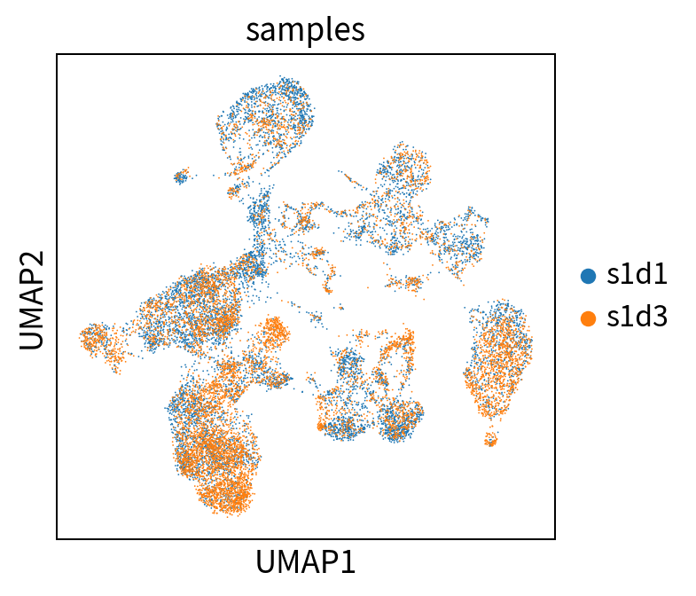
读图详解 · 按自己的节奏往下读
UMAP1/UMAP2 是二维嵌入坐标，没有浓度、细胞数或时间单位。坐标正负与原点没有固定生物学含义。
离散标签看分类图例，连续指标看色条。多面板可用不同颜色编码同一批坐标。
先查点代表的对象和标题，再看群体内部混合及边缘，最后回到 marker 和 QC 表检验看似分开的群体。
BBKNN 改变邻居选择方式；不能解释成把原始 counts 的批次差异减掉。该路线已计算，但历史主线没有选作下游图。
远处两团之间的距离和空白不直接量化谱系距离；图形旋转、压缩、朝向不代表生物学反转。
UMAP1/UMAP2 是二维嵌入坐标，没有浓度、细胞数或时间单位。坐标正负与原点没有固定生物学含义。
离散标签看分类图例，连续指标看色条。多面板可用不同颜色编码同一批坐标。
先查点代表的对象和标题，再看群体内部混合及边缘，最后回到 marker 和 QC 表检验看似分开的群体。
三条路线都来自同一历史案例。观察样本混合和结构是否保留；不同 UMAP 的旋转、位移和缩放不能直接比较。
先对照同类细胞内的样本混合，再看稀有群和已知 marker 结构是否保留。过强混合可能把生物差异一起抹掉；混合不足也可能让后面聚类受技术结构主导。坐标旋转、整体缩放与远近不应当作质量指标。
历史明确选中 uncorrected。新版 AI 应呈现三条真实候选，给出理由，再记录用户选择。决定选哪张邻居图会影响后续聚类与解释，不能把三张图随意混用。若实验设计无需整合，也应记录依据。
本案例最终 selected_integration=uncorrected；已计算不等于已选用。
06
Leiden 根据邻居图寻找联系更紧密的群体。分辨率控制粒度，但并不直接指定生物学细胞类型数。同一数据可以存在多种有用尺度：粗尺度看谱系，细尺度看状态或亚群。
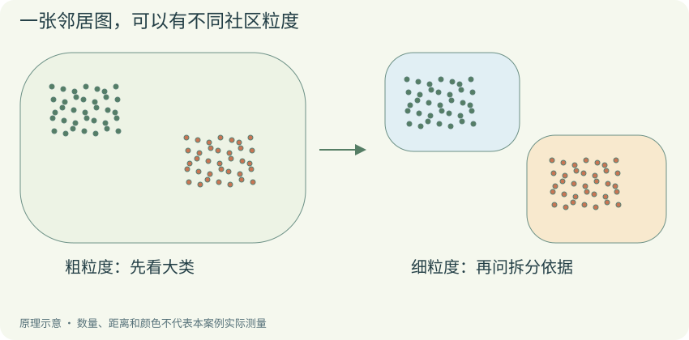
小屏可横向查看，也可放大阅读。
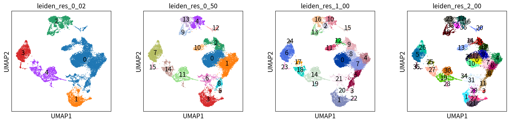
读图详解 · 按自己的节奏往下读
历史分辨率 0.02/0.50/1.00/2.00 分别得到 5/16/25/37 簇。 四个面板是同一批细胞的四种 Leiden 分辨率结果，细胞坐标保持一致，颜色与数字是各自聚类号。
横纵轴为 UMAP1/UMAP2；编号 0、1 等没有定量大小意义。
同一数字或颜色在不同分辨率下不保证代表同一个细胞集合。分辨率越大通常更细，但须核查实际簇数。
从 0.02 的粗团块追踪到 0.50、1.00、2.00，结合分样本簇数量和 marker 证据判断哪些拆分有可解释依据。
5、16、25、37 簇分别对应四个分辨率。低分辨率会把免疫细胞合并为较混杂大群，细分后仍需 marker 验证。
聚类号不是细胞类型；同一颜色跨图匹配不可靠。更多簇不自动更准确。
横纵轴为 UMAP1/UMAP2；编号 0、1 等没有定量大小意义。
同一数字或颜色在不同分辨率下不保证代表同一个细胞集合。分辨率越大通常更细，但须核查实际簇数。
从 0.02 的粗团块追踪到 0.50、1.00、2.00，结合分样本簇数量和 marker 证据判断哪些拆分有可解释依据。
簇数读取历史 summary；没有重新聚类。回到上方四联图和 marker 图比较，簇数不是优劣评分。
看每个簇的样本组成、人数与 QC。某簇如果几乎全来自单一样本，先查实验设计和批次；某簇若线粒体高、检出基因低，可能是质量相关结构。但不能只因某项高就删除整簇。
0.02 的 0 簇与 0.50 的 0 簇不是同一个标签定义。跨分辨率比较要看细胞成员、marker 与组成。历史粗粒度出现 Immune_mixed，是提醒这个群混杂，而非一种正式独立细胞类型。
新版会先让第 06 章保留所有候选，再由第 07 章用同一套 marker 比较，确认粗、细两种聚类列。这样学生知道每种粒度解释了什么，不必在看到证据前盲选一个 resolution。
编号与颜色是显示标签，不能代替细胞成员和生物学证据。
07
UMAP 表达图问“信号在哪里”，小提琴问“群内分布怎样”，点图同时问“多少细胞检出、均值多高”，矩阵图看群均值，热图展开单细胞差异。切换图形不等于重复证明同一个结论，它们提供互补视角。
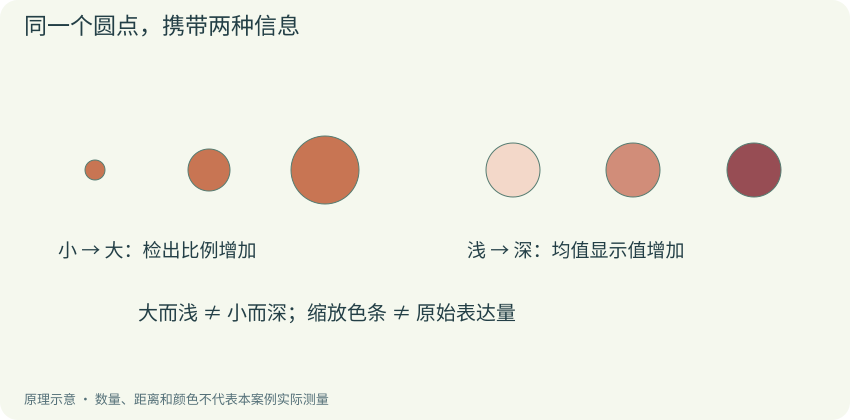
小屏可横向查看，也可放大阅读。
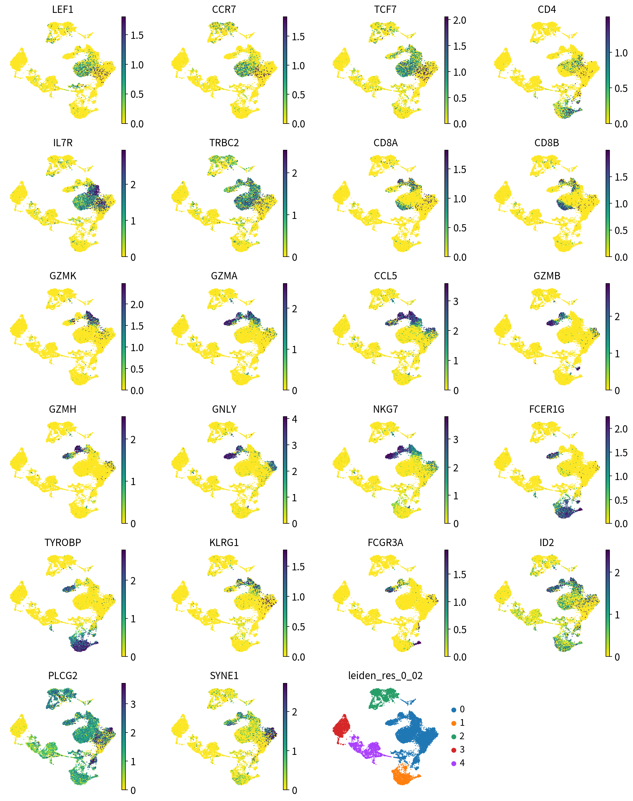
CD3D、TRAC 等 T 系证据应与 GNLY/NKG7 等细胞毒相关信号联合阅读；共享细胞毒程序不等于共享完整细胞身份。
读图详解 · 按自己的节奏往下读
sc.pl.umap 按 markers 列表着色，sort_order=False；遮挡也会影响视觉。 每个小面板显示一个 marker 在全部细胞上的表达，最后的分类面板用于对照聚类。
横纵轴为 UMAP 坐标；每个基因旁色条为该基因本图表达范围。
vmin=0、vmax=p99 控制显示截断；超过第 99 百分位的值可能显示为相同颜色，不是表达被改写。
先选一个谱系的多个 marker，看它们是否在同一群富集，再找反证 marker，最后与分类面板和点图核对。
CD3D、TRAC 等 T 系证据应与 GNLY/NKG7 等细胞毒相关信号联合阅读；共享细胞毒程序不等于共享完整细胞身份。
单个阳性 marker 不足以判定细胞身份。不同面板色条上限可不同，不能按相同颜色横比基因的绝对量。
横纵轴为 UMAP 坐标；每个基因旁色条为该基因本图表达范围。
vmin=0、vmax=p99 控制显示截断；超过第 99 百分位的值可能显示为相同颜色，不是表达被改写。
先选一个谱系的多个 marker，看它们是否在同一群富集，再找反证 marker，最后与分类面板和点图核对。
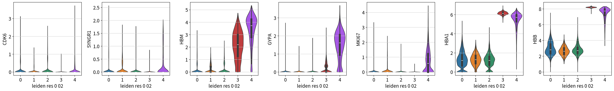
读图详解 · 按自己的节奏往下读
sc.pl.violin，groupby 为实际聚类列，inner=box。 每个面板对应一个基因，各小提琴对应一个聚类内所有细胞的表达分布。
来源为 s1d1、s1d3 合并的历史案例。主线对象保留 17,041 枚细胞、23,427 个基因；图中只展示指定 marker、主成分或群体汇总，不能据展示元素数反推完整对象维度。
横轴是聚类类别；纵轴是当前表达层的表达值。按面板刻度读取，勿把类别号当连续数值。
琴身表示密度，内部箱体汇总分布；stripplot=False 时未画出每个细胞，不表示细胞更少。
先看零附近的堆积，再比较中位与长尾。均值高可能由少数高表达细胞拉动，配合 dotplot 的检出比例更清楚。
查看 HBA1/HBB 与增殖相关 marker 的分布，可区分普遍的红系信号和只出现在一部分细胞的增殖状态。
零值多不能直接当基因缺失。不同基因的坐标范围不一定相同，图形高度不能跨面板直接作比较。
横轴是聚类类别；纵轴是当前表达层的表达值。按面板刻度读取，勿把类别号当连续数值。
琴身表示密度，内部箱体汇总分布；stripplot=False 时未画出每个细胞，不表示细胞更少。
先看零附近的堆积，再比较中位与长尾。均值高可能由少数高表达细胞拉动，配合 dotplot 的检出比例更清楚。
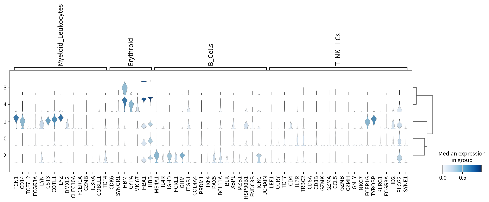
读图详解 · 按自己的节奏往下读
sc.pl.stacked_violin，dendrogram=True。 紧凑排列的小提琴分别描述一个群内一个基因的分布；它没有把每个小提琴简化为单个均值。
来源为 s1d1、s1d3 合并的历史案例。主线对象保留 17,041 枚细胞、23,427 个基因；图中只展示指定 marker、主成分或群体汇总，不能据展示元素数反推完整对象维度。
行列分别是群体和基因，实际方向看标签；单元格内部的表达方向不能当作全图共同连续轴。
standard_scale=var 是显示用按基因缩放；树状图辅助排列群体，不是发育顺序。
先定位一个群的一组 marker，再沿相同基因跨群观察分布，与 matrixplot 的均值和 dotplot 的比例互补。
这是粗分辨率的群体展示，先辨认 5 个分组，再查看红系与免疫 marker 的不同分布。
图太密时应放大原图，不能仅凭缩略图判断尾部。分组层面的统计依然隐藏单细胞异质性。
行列分别是群体和基因，实际方向看标签；单元格内部的表达方向不能当作全图共同连续轴。
standard_scale=var 是显示用按基因缩放；树状图辅助排列群体，不是发育顺序。
先定位一个群的一组 marker，再沿相同基因跨群观察分布，与 matrixplot 的均值和 dotplot 的比例互补。
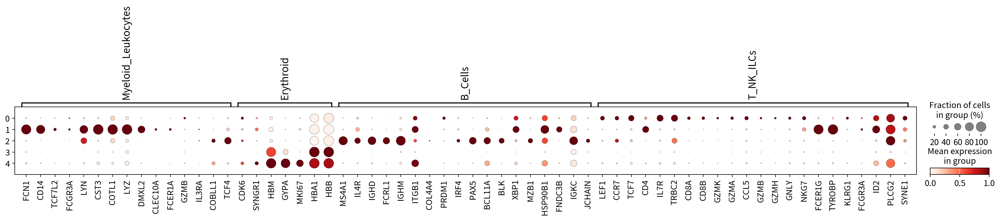
marker_fraction_coarse 与 marker_mean_coarse 分别支撑比例和原均值，dotplot_color_coarse 才对应缩放后的颜色。
读图详解 · 按自己的节奏往下读
轴标签都是类别名而非连续坐标。大小图例表示检出该基因的细胞比例；表中的 fraction 是 0–1，图例可能显示百分数。
颜色是分组平均表达；本图 standard_scale=var 将每个基因的组均值在组间缩放到 0–1，不是 z-score，也不是原始 counts。
先按同一基因纵向比较各群，再沿同一群横向看一组相互支持的 marker。大而浅与小而深表达不同情形，要同时读大小和颜色。
marker_fraction_coarse 与 marker_mean_coarse 分别支撑比例和原均值，dotplot_color_coarse 才对应缩放后的颜色。
颜色最深只说明该基因在展示组中的相对位置，不代表不同基因有同样绝对表达。检测不到也不等于生物学上绝不表达。
轴标签都是类别名而非连续坐标。大小图例表示检出该基因的细胞比例；表中的 fraction 是 0–1，图例可能显示百分数。
颜色是分组平均表达；本图 standard_scale=var 将每个基因的组均值在组间缩放到 0–1，不是 z-score，也不是原始 counts。
先按同一基因纵向比较各群，再沿同一群横向看一组相互支持的 marker。大而浅与小而深表达不同情形，要同时读大小和颜色。
教学示意：大小回答“多少细胞检测到”，颜色回答“这一基因在不同群体中相对多高”。本控件不模拟 Scanpy 的具体面积映射，也不产生真实表达量。
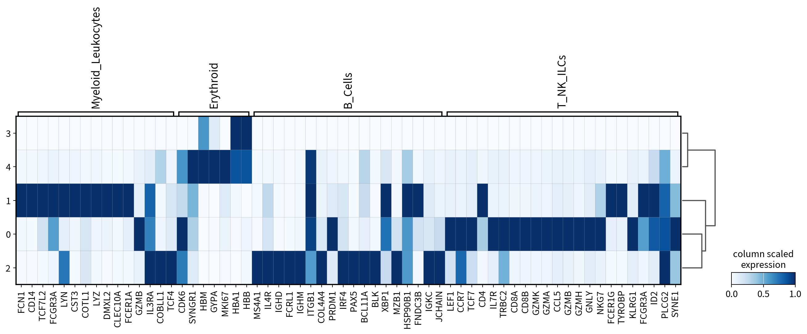
蓝色高值分布在不同 marker 模块：展示的是组均值的相对模式；从这里不能直接读出检出百分比。
读图详解 · 按自己的节奏往下读
sc.pl.matrixplot，standard_scale=var，cmap=Blues。 一个色块对应一个分组内一个基因的平均表达，不是单个细胞。
来源为 s1d1、s1d3 合并的历史案例。主线对象保留 17,041 枚细胞、23,427 个基因；图中只展示指定 marker、主成分或群体汇总，不能据展示元素数反推完整对象维度。
横轴是基因，纵轴是分组；树状图可能改变显示顺序，但没有改变分组成员。
蓝色深浅表示本基因的组均值在各组间缩放到 0–1；这里的 column scaled expression 不是标准差单位。
沿同一基因看哪组相对高，再看一组 marker 是否一致支持同一谱系。结合 fraction 表排查均值由少数细胞主导的情况。
蓝色高值分布在不同 marker 模块：展示的是组均值的相对模式；从这里不能直接读出检出百分比。
不能把不同基因同样深的蓝色说成同样高表达；缩放会把较弱但相对最高的信号也显示深。
横轴是基因，纵轴是分组；树状图可能改变显示顺序，但没有改变分组成员。
蓝色深浅表示本基因的组均值在各组间缩放到 0–1；这里的 column scaled expression 不是标准差单位。
沿同一基因看哪组相对高，再看一组 marker 是否一致支持同一谱系。结合 fraction 表排查均值由少数细胞主导的情况。
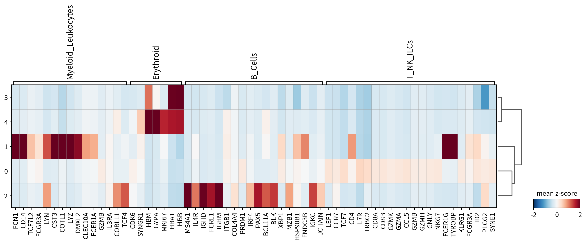
与上一图使用不同显示单位。相同生物信号可形成不同色阶，这是数值变换的结果。
读图详解 · 按自己的节奏往下读
横轴为基因、纵轴为群；色条单位为标准差，不是倍数变化或 counts。
红色偏高、蓝色偏低；vmin=-2/vmax=2 截断显示。负值表示低于该基因均值，不是负表达。
先找同一群中一组同向偏红的 marker，再对照原 log1p 均值与检出比例。
与上一图使用不同显示单位。相同生物信号可形成不同色阶，这是数值变换的结果。
按基因标准化消除了基因间绝对尺度。极端值截断后同色不代表同值。
横轴为基因、纵轴为群；色条单位为标准差，不是倍数变化或 counts。
红色偏高、蓝色偏低；vmin=-2/vmax=2 截断显示。负值表示低于该基因均值，不是负表达。
先找同一群中一组同向偏红的 marker，再对照原 log1p 均值与检出比例。
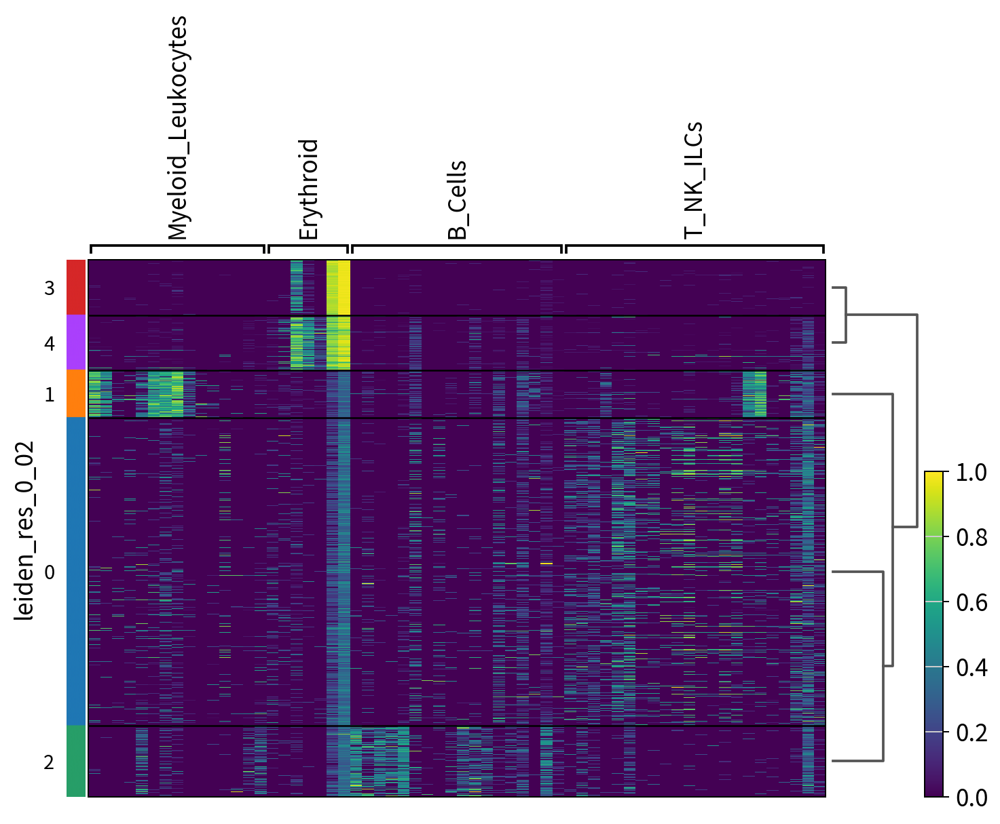
聚类 0 是很大的粗免疫群，条带内部的表达差异提醒我们粗粒度标签可能混合多个类型。
读图详解 · 按自己的节奏往下读
本图未启用 swap_axes，纵向密集条带是细胞，横轴是基因。不能误读成每格都是一个聚类均值。
standard_scale=var 对基因显示范围缩放到 0–1；树状图是群体排序信息。
先定位细胞群的连续区块，再看同一基因在区块内部是否普遍升高或仅少数细胞突出。
聚类 0 是很大的粗免疫群，条带内部的表达差异提醒我们粗粒度标签可能混合多个类型。
看起来大片同色也可能受渲染分辨率影响。放大原图并结合点图，不能仅用热图估计准确检出率。
本图未启用 swap_axes，纵向密集条带是细胞，横轴是基因。不能误读成每格都是一个聚类均值。
standard_scale=var 对基因显示范围缩放到 0–1；树状图是群体排序信息。
先定位细胞群的连续区块，再看同一基因在区块内部是否普遍升高或仅少数细胞突出。
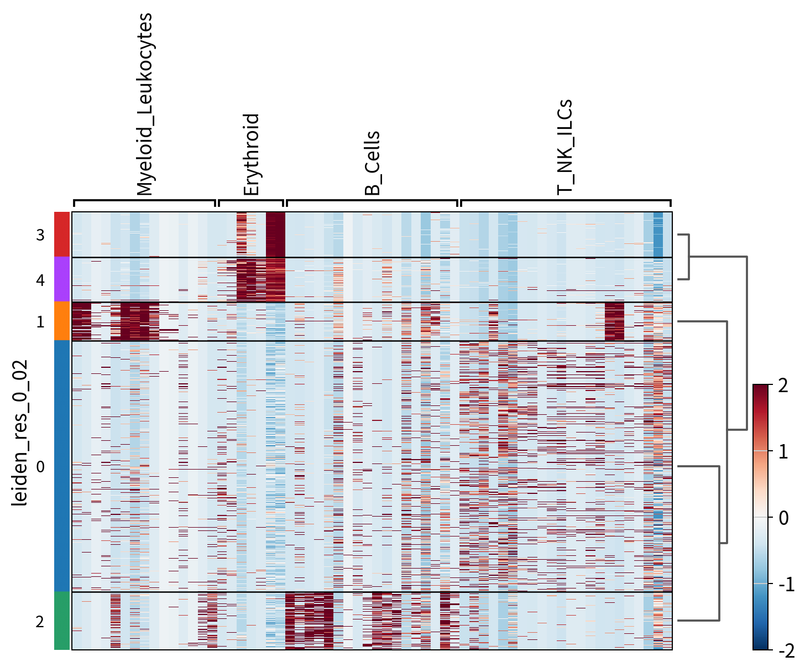
该图实际没有交换坐标轴；源码里关于 swap_axes 的注释不等于运行了这个参数。
读图详解 · 按自己的节奏往下读
本图仍是行细胞、列基因；代码中的 swap_axes 注释没有实际启用。
红蓝色条范围 -2 到 2，表示相对该基因均值的标准差单位；超过范围只改变显示。
比较同一群内条纹是否一致，再看不同群相对模式；用原表达层确认方向和稀疏性。
该图实际没有交换坐标轴；源码里关于 swap_axes 的注释不等于运行了这个参数。
按 z-score 看见负数不代表表达为负；此图不能与 0–1 缩放热图共用同一色条解释。
本图仍是行细胞、列基因；代码中的 swap_axes 注释没有实际启用。
红蓝色条范围 -2 到 2，表示相对该基因均值的标准差单位；超过范围只改变显示。
比较同一群内条纹是否一致，再看不同群相对模式；用原表达层确认方向和稀疏性。
使用前核对物种、组织和基因 ID。骨髓中的 HBA1/HBB、MS4A1、CD3D/TRAC、LYZ 等提供不同谱系线索，但每个基因都不是无条件专一。证据应包含多个支持 marker、反证、检出比例、QC 和样本组成。不存在的数据列或未检测基因要明确说明，不能把缺失当阴性。
大小才描述检出比例；按基因缩放颜色不能跨基因比较绝对表达。
08
聚类只提供计算分组。细胞注释把本次分组与生物学知识联系起来，必须同时考虑 marker、群内异质性、质量和组织背景。粗标签便于概括，细标签表达更具体判断，但需要更强支持。
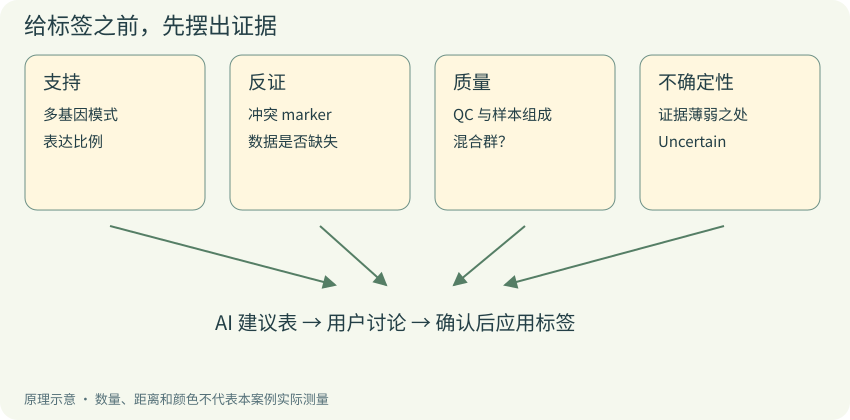
小屏可横向查看，也可放大阅读。
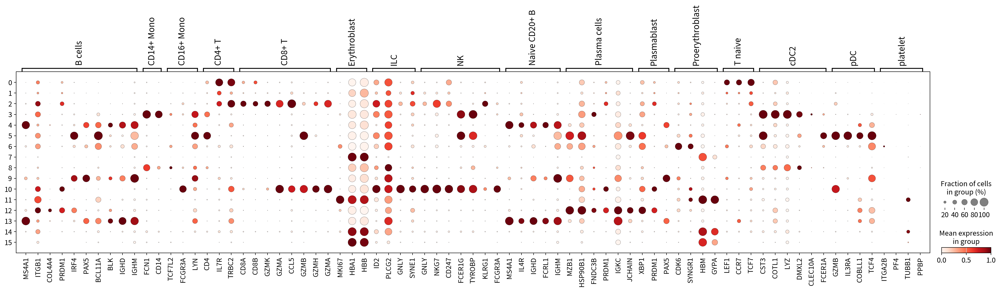
读图详解 · 按自己的节奏往下读
来源为 s1d1、s1d3 合并的历史案例。主线对象保留 17,041 枚细胞、23,427 个基因；图中只展示指定 marker、主成分或群体汇总，不能据展示元素数反推完整对象维度。
轴标签都是类别名而非连续坐标。大小图例表示检出该基因的细胞比例；表中的 fraction 是 0–1，图例可能显示百分数。
颜色是分组平均表达；本图 standard_scale=var 将每个基因的组均值在组间缩放到 0–1，不是 z-score，也不是原始 counts。
先按同一基因纵向比较各群，再沿同一群横向看一组相互支持的 marker。大而浅与小而深表达不同情形，要同时读大小和颜色。
16 个细粒度簇可比 5 个粗簇展示更多差异，但细分标签仍需支持 marker、反证、QC 和不确定性共同决定。
颜色最深只说明该基因在展示组中的相对位置，不代表不同基因有同样绝对表达。检测不到也不等于生物学上绝不表达。
轴标签都是类别名而非连续坐标。大小图例表示检出该基因的细胞比例；表中的 fraction 是 0–1，图例可能显示百分数。
颜色是分组平均表达；本图 standard_scale=var 将每个基因的组均值在组间缩放到 0–1，不是 z-score，也不是原始 counts。
先按同一基因纵向比较各群，再沿同一群横向看一组相互支持的 marker。大而浅与小而深表达不同情形，要同时读大小和颜色。
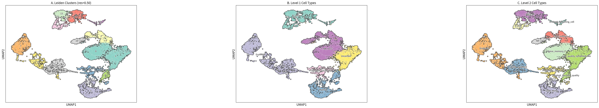
并排展示 Leiden、一级与二级标签；Low_quality_lymphoid_like 等名称保留不确定性，不能当成已证实的新细胞类型。
读图详解 · 按自己的节奏往下读
UMAP1/UMAP2 是二维嵌入坐标，没有浓度、细胞数或时间单位。坐标正负与原点没有固定生物学含义。
离散标签看分类图例，连续指标看色条。多面板可用不同颜色编码同一批坐标。
先查点代表的对象和标题，再看群体内部混合及边缘，最后回到 marker 和 QC 表检验看似分开的群体。
并排展示 Leiden、一级与二级标签；Low_quality_lymphoid_like 等名称保留不确定性，不能当成已证实的新细胞类型。
远处两团之间的距离和空白不直接量化谱系距离；图形旋转、压缩、朝向不代表生物学反转。
UMAP1/UMAP2 是二维嵌入坐标，没有浓度、细胞数或时间单位。坐标正负与原点没有固定生物学含义。
离散标签看分类图例，连续指标看色条。多面板可用不同颜色编码同一批坐标。
先查点代表的对象和标题，再看群体内部混合及边缘，最后回到 marker 和 QC 表检验看似分开的群体。
历史 annotation_evidence_legacy.csv 解释这次案例怎样得出标签。它不是新数据的答案。换数据、聚类或成员后，相同数字簇号可能对应完全不同群体。
新版第 08 章先导出 marker_evidence、cluster_qc_evidence 和空的 annotation_proposal。程序固定 cluster_key、cluster、n_cells；AI 根据本次图表填写 level1、level2、support、supporting_markers、opposing_markers、evidence_refs、rationale、uncertainty。
AI 逐簇说明拟注释成什么、有哪些支持、反证是否存在、哪里不确定，并给出本次证据路径。用户可以接受或修改。证据不足时用 Uncertain 或谨慎描述，不能为了把表填满而硬判一种类型。support 是定性支持程度，不是正确概率。
只有用户真实确认后才应用标签。若建议表、上游结果或成员变了，旧确认就失效；不能用 AI 自己的建议填成用户回复。最终保留两级标签、证据表与记录，方便后面发现矛盾时回到这一站修订。
聚类编号没有跨数据身份含义。新建议表必须绑定本次聚类、实际成员和证据。
09
全体对象的特征选择和邻居关系主要服务于全体差异。若想深入 B 群，可以在原图上限制划分，也可以提取该群后重新归一化、选特征、降维与建图。两条路线回答的局部问题接近，但计算参照不同。
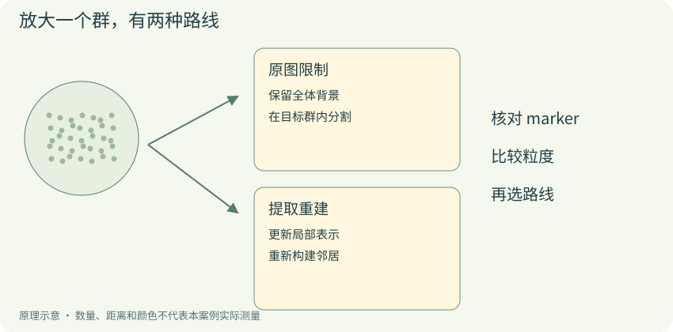
小屏可横向查看，也可放大阅读。
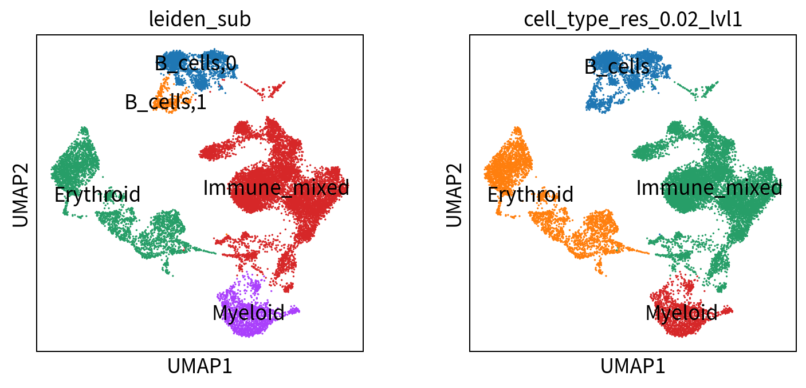
全体对象仍在，B 群在原邻居图内细分；其他群保留作背景，不能把全图点数当作 B 子集点数。
读图详解 · 按自己的节奏往下读
从当前邻居图计算 UMAP；随机种子、PC 与邻居设置都影响布局。 每个点是一枚细胞，相近表示在本次低维嵌入中相近；颜色表示标题列的分组或数值。
UMAP1/UMAP2 是二维嵌入坐标，没有浓度、细胞数或时间单位。坐标正负与原点没有固定生物学含义。
离散标签看分类图例，连续指标看色条。多面板可用不同颜色编码同一批坐标。
先查点代表的对象和标题，再看群体内部混合及边缘，最后回到 marker 和 QC 表检验看似分开的群体。
全体对象仍在，B 群在原邻居图内细分；其他群保留作背景，不能把全图点数当作 B 子集点数。
远处两团之间的距离和空白不直接量化谱系距离；图形旋转、压缩、朝向不代表生物学反转。
UMAP1/UMAP2 是二维嵌入坐标，没有浓度、细胞数或时间单位。坐标正负与原点没有固定生物学含义。
离散标签看分类图例，连续指标看色条。多面板可用不同颜色编码同一批坐标。
先查点代表的对象和标题，再看群体内部混合及边缘，最后回到 marker 和 QC 表检验看似分开的群体。
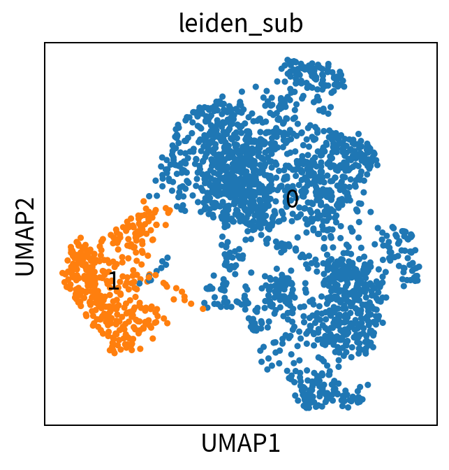
本例提取粗级 B_cells 共 2,268 枚细胞，并得到两个子簇。重建后坐标与全图不可逐点按数值比较。
读图详解 · 按自己的节奏往下读
来源为 s1d1、s1d3 合并的历史案例。此图只看粗级 B_cells 的 2,268 枚细胞；重新归一化与建图后，参照范围和坐标均不同于全体对象。
UMAP1/UMAP2 是二维嵌入坐标，没有浓度、细胞数或时间单位。坐标正负与原点没有固定生物学含义。
离散标签看分类图例，连续指标看色条。多面板可用不同颜色编码同一批坐标。
本例提取粗级 B_cells 共 2,268 枚细胞，并得到两个子簇。重建后坐标与全图不可逐点按数值比较。
远处两团之间的距离和空白不直接量化谱系距离；图形旋转、压缩、朝向不代表生物学反转。
UMAP1/UMAP2 是二维嵌入坐标，没有浓度、细胞数或时间单位。坐标正负与原点没有固定生物学含义。
离散标签看分类图例，连续指标看色条。多面板可用不同颜色编码同一批坐标。
先查点代表的对象和标题，再看群体内部混合及边缘，最后回到 marker 和 QC 表检验看似分开的群体。
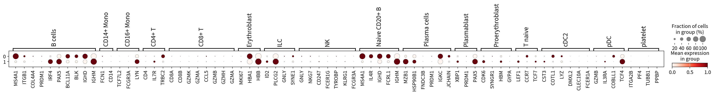
在本次子集范围内按基因缩放，颜色参照范围已经改变；不要把这里的深红与全体对象点图直接作绝对量比较。
读图详解 · 按自己的节奏往下读
dotplot_color 表保存显示颜色，marker_mean 保存原 log1p 均值，不能互换。 一个圆点对应一个细胞群与一个基因的组合；分组通常在纵轴，基因在横轴，遇到 swap_axes 则按真实标签读。
来源为 s1d1、s1d3 合并的历史案例。此图只看粗级 B_cells 的 2,268 枚细胞；重新归一化与建图后，参照范围和坐标均不同于全体对象。
轴标签都是类别名而非连续坐标。大小图例表示检出该基因的细胞比例；表中的 fraction 是 0–1，图例可能显示百分数。
颜色是分组平均表达；本图 standard_scale=var 将每个基因的组均值在组间缩放到 0–1，不是 z-score，也不是原始 counts。
先按同一基因纵向比较各群，再沿同一群横向看一组相互支持的 marker。大而浅与小而深表达不同情形，要同时读大小和颜色。
在本次子集范围内按基因缩放，颜色参照范围已经改变；不要把这里的深红与全体对象点图直接作绝对量比较。
颜色最深只说明该基因在展示组中的相对位置，不代表不同基因有同样绝对表达。检测不到也不等于生物学上绝不表达。
轴标签都是类别名而非连续坐标。大小图例表示检出该基因的细胞比例；表中的 fraction 是 0–1，图例可能显示百分数。
颜色是分组平均表达；本图 standard_scale=var 将每个基因的组均值在组间缩放到 0–1，不是 z-score，也不是原始 counts。
先按同一基因纵向比较各群，再沿同一群横向看一组相互支持的 marker。大而浅与小而深表达不同情形，要同时读大小和颜色。
历史提取的是粗级 B_cells，共 2,268 枚，不能与细粒度一级 B_cells 的 2,379 枚混为一谈。两个标签列的定义不同，人数也不同。新版会先展示目标候选和人数，用户确认后才继续两种路线对照。
下面两幅图比较全体对象的细粒度注释类别，不是 B 子集谱系。它们体现类别平均表示相似性。
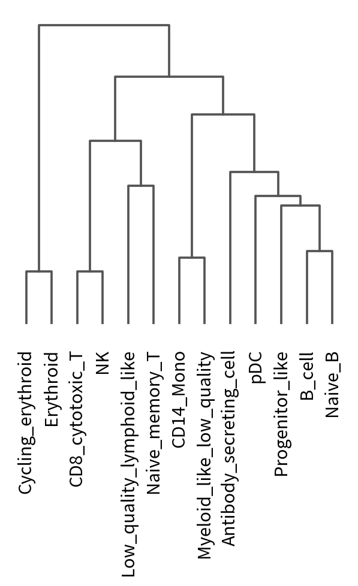
读图详解 · 按自己的节奏往下读
sc.tl.dendrogram 默认在可用 PCA 表示上聚合类别并计算相关性；以实际 uns 记录为准。 每个叶端是一个注释群体，分枝根据其表示向量相似性连接。
叶端轴是类别；合并高度为聚类距离，非发育时间。具体方向由树朝向决定。
枝条没有细胞数量编码；左右顺序可以旋转而不改变层级。
从感兴趣的叶端向内追踪，观察最先与哪类合并，再与相关性矩阵和 marker 证据对照。
本图使用细粒度手工注释列，叶端包括红系、淋巴和髓系等标签；它不是 B 子群的发育轨迹。
它不是谱系追踪结果，不能因两个类别相邻就推断祖先后代或认定标签正确。
叶端轴是类别；合并高度为聚类距离，非发育时间。具体方向由树朝向决定。
枝条没有细胞数量编码；左右顺序可以旋转而不改变层级。
从感兴趣的叶端向内追踪，观察最先与哪类合并，再与相关性矩阵和 marker 证据对照。
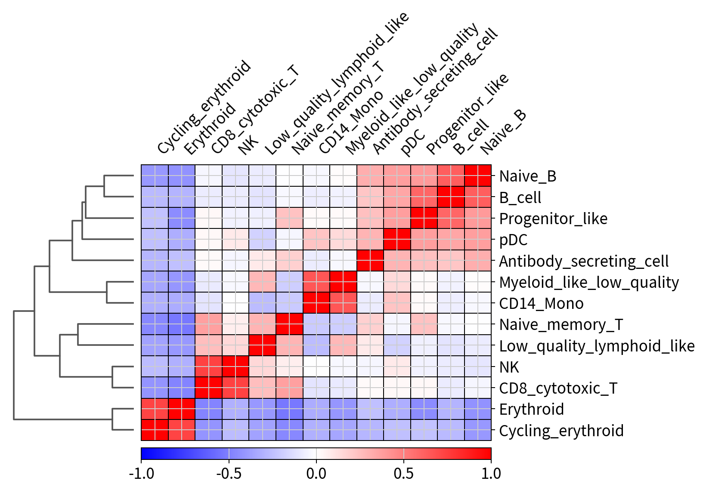
读图详解 · 按自己的节奏往下读
sc.pl.correlation_matrix 读取 dendrogram 的相关性结果。 一个格子比较一对注释类别的平均表示；行列都列出同一组类别，对角线是自身比较。
红色为正相关、蓝色为负相关，旁边树状图给出相似性排序。此处相关性基于 dendrogram 使用的表示，不能自动称全基因原始表达相关性。
先从对角线向外找块状结构，定位一对具体类别，再核对共享 marker 和 QC 是否影响相似性。
红系相关群之间和部分淋巴群之间可见局部相似性；应结合表示空间与 marker，而不能宣称负相关说明互相抑制。
高相关不证明同一种细胞；低相关不表示彼此有负因果作用。
两轴是细胞类别名称；色条为相关系数，范围 -1 到 1，无 UMI 单位。
红色为正相关、蓝色为负相关，旁边树状图给出相似性排序。此处相关性基于 dendrogram 使用的表示，不能自动称全基因原始表达相关性。
先从对角线向外找块状结构，定位一对具体类别，再核对共享 marker 和 QC 是否影响相似性。
用户结合 marker 与目标问题确认使用哪条子群路线。重建后的 UMAP 不能按坐标值直接对回全图；应依靠细胞 ID。更多子簇仍需证据，不自动等于发现新类型。
子集的表达尺度和邻居结构会改变，坐标没有直接数值对应关系。
10
本例既做每簇对其他簇的 one-versus-rest，也比较细粒度一级标签 B_cells 与 T_NK_ILCs。比较目标不同，背景也不同。必须在看 p 值前确定问题，不能挑完显著基因再倒推最有利的问题。
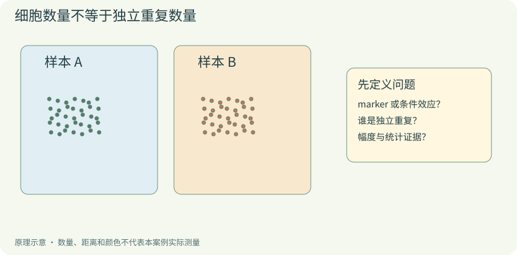
小屏可横向查看，也可放大阅读。
本课使用 log1p 层，输出 names、scores、logfoldchanges、pvals、pvals_adj。scores 是排序检验统计量，logfoldchanges 是实现给出的近似 log2 倍数变化，pvals_adj 是多重检验校正后的值。三者含义不同；p 值不能当效应大小。
例如 B 对 T/NK/ILC 表中 CD74 的 logfoldchanges 约 5.025，支持该比较中的表达差异线索；这并不说明每一枚 B 细胞表达恰好是每一枚 T 细胞的固定倍数。数值为 0 的 p 值是有限精度表示，不是零错误风险。
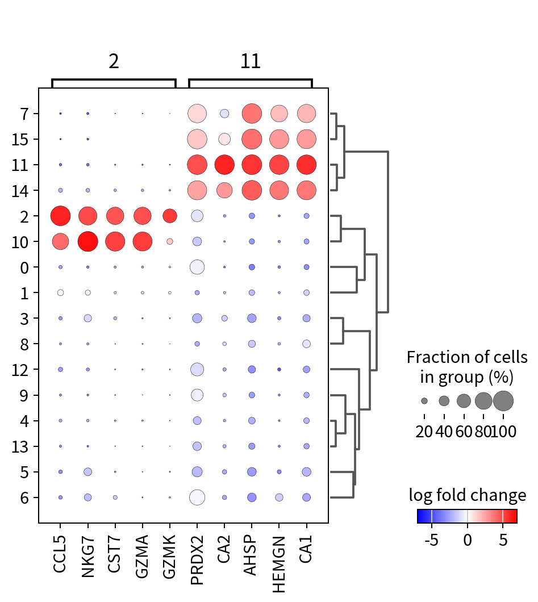
读图详解 · 按自己的节奏往下读
类别轴为 groups 与 genes；大小为表达细胞比例，颜色按本图图例为 mean expression。没有 standard_scale=var 的图不能套用 0–1 缩放解释。
颜色显示当前 log1p 均值，圆面积反映检出比例；树状图决定组的显示顺序。
先核对基因是每簇 top 几，再看是否同时满足目标组高、其他组低，最后打开 markers_by_cluster 的分数、幅度与校正 p 值。
每簇前 3 个候选展示在多个群体中；同一基因可能在不止一个群体检出，因此需要结合特异性过滤表。
进入 Top 名单不等于达到显著阈值或具有足够特异性。细胞级检验不能代替生物重复支持的条件比较。
类别轴为 groups 与 genes；大小为表达细胞比例，颜色按本图图例为 mean expression。没有 standard_scale=var 的图不能套用 0–1 缩放解释。
颜色显示当前 log1p 均值，圆面积反映检出比例；树状图决定组的显示顺序。
先核对基因是每簇 top 几，再看是否同时满足目标组高、其他组低，最后打开 markers_by_cluster 的分数、幅度与校正 p 值。
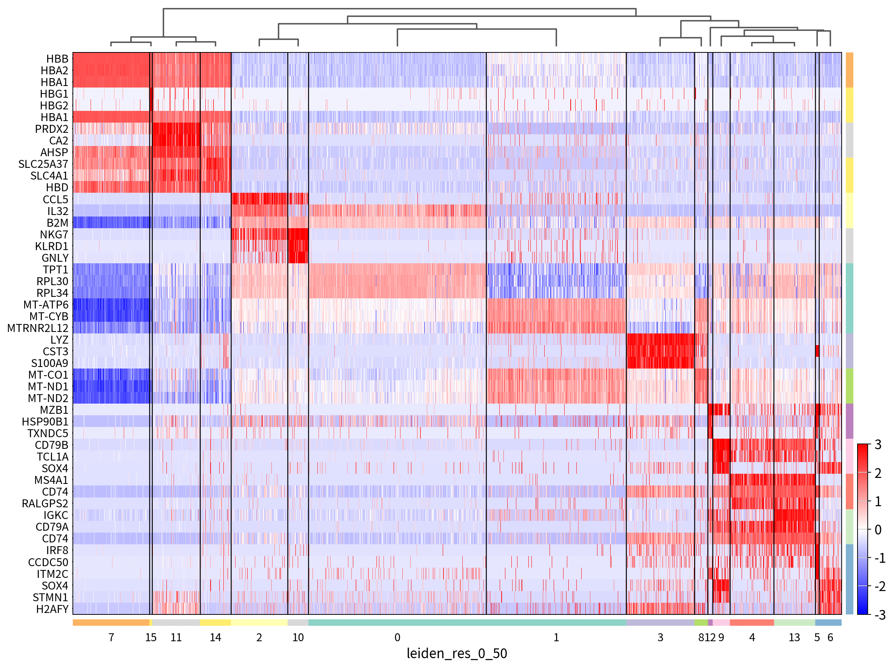
基因名称在纵轴、细胞沿横向排列；它与第 07 章细胞纵向排列的图读法不同。
读图详解 · 按自己的节奏往下读
sc.pl.rank_genes_groups_heatmap，n_genes=3，layer=scaled，swap_axes=True。 本图每行是排名基因，每列是一枚细胞，顶部类别条标记簇。
swap_axes=True 后方向与第 07 章热图相反；两轴为基因和细胞类别顺序，非时间。
bwr 色条显示 scaled 层 z-score，-3 到 3 截断；基因是每簇前 3 名，重复基因可再次出现。
先找同簇细胞形成的区块，再横向读一个基因是否只在目标簇较高；结合表格检验其特异性。
基因名称在纵轴、细胞沿横向排列；它与第 07 章细胞纵向排列的图读法不同。
排序基因是在同一数据中发现并展示，不能当作独立验证；热图颜色不是 p 值。
swap_axes=True 后方向与第 07 章热图相反；两轴为基因和细胞类别顺序，非时间。
bwr 色条显示 scaled 层 z-score，-3 到 3 截断；基因是每簇前 3 名，重复基因可再次出现。
先找同簇细胞形成的区块，再横向读一个基因是否只在目标簇较高；结合表格检验其特异性。
filter_rank_genes_groups 按簇内/簇外检出比例等规则过滤，不符合规则的候选可在对应导出位置留下空 names。它不等于原数据缺少那个基因，也不意味着应随意填一个新名字。
本课细胞级 Wilcoxon 作为描述性 marker 探索。要回答疾病或处理条件效应，需要独立生物学重复和匹配的设计，可考虑按样本与细胞类型汇总等方法，但本次教程不额外增加未运行的正式分析结果。
实际运行前先看可用标签、组别和人数，明确 comparison.question/group/reference，再确认执行。完成后同时报告幅度、检出比例、统计证据和设计边界。
条件效应需要实验设计和独立重复；大量同一样本细胞不构成相同数量的生物学重复。
11
CellTypist 将细胞表达与训练得到的类型模式比较。可用模型受物种、组织、发育阶段、疾病背景、基因 ID 和标签粒度限制。一个名字含 Immune 的模型并不因此适合任何物种的免疫相关数据。
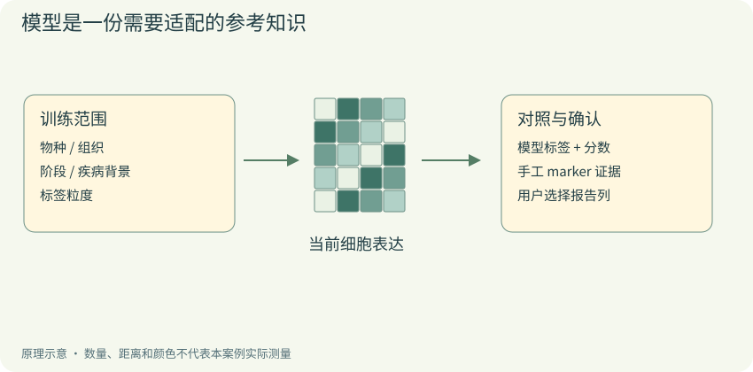
小屏可横向查看，也可放大阅读。
模型标签和评分都受训练范围限制，要与手工证据交叉核对。
左侧是经过物种、组织和基因匹配检查的模型；中央将本次细胞映射到已有标签。右侧保留手工证据与模型意见的对照，不用某个高分把所有其他证据覆盖。模型外的新状态可能被勉强映射到已知类别。
按 99 指南先查本地，再查官方目录与模型说明，列具体候选及适用范围，用户同意后下载。断网意味着尚未完成检索，不等于官方没有模型；植物也不能直接套用人类免疫标签。找不到适配模型时讨论跳过，继续使用手工标签，不生成假自动列。
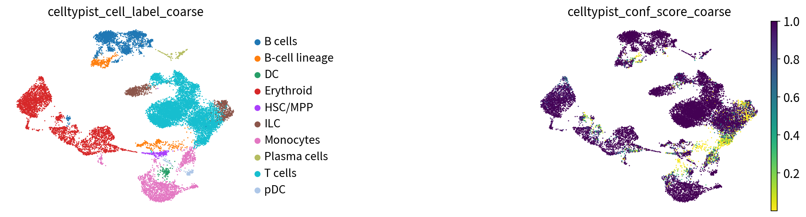
手工 B_cells 行与模型 B cells 对应 1,982 枚，还分到 B-cell lineage 291 枚、Plasma cells 106 枚；名称粒度差异不能简单算成错误率。
读图详解 · 按自己的节奏往下读
粗/细模型输出分别保留，用真实列名区分，不凭文件名推断适配。 左图是 CellTypist 标签，右图是同一细胞的模型评分；一个点仍是一枚细胞。
标签颜色是类别，分数颜色是连续量，不能把颜色数量看成真实已验证类型数。
先检查模型物种/组织和标签粒度，再看低分区域及手工/自动交叉表，定位不一致群体的 marker。
手工 B_cells 行与模型 B cells 对应 1,982 枚，还分到 B-cell lineage 291 枚、Plasma cells 106 枚；名称粒度差异不能简单算成错误率。
模型可能不包含本数据的真实类型；分数不是校准后的正确概率。自动预测不能成为无条件真值。
两轴为当前 UMAP 坐标，右色条是模型输出的 conf_score，通常在 0–1；它没有 UMI 单位。
标签颜色是类别，分数颜色是连续量，不能把颜色数量看成真实已验证类型数。
先检查模型物种/组织和标签粒度，再看低分区域及手工/自动交叉表，定位不一致群体的 marker。
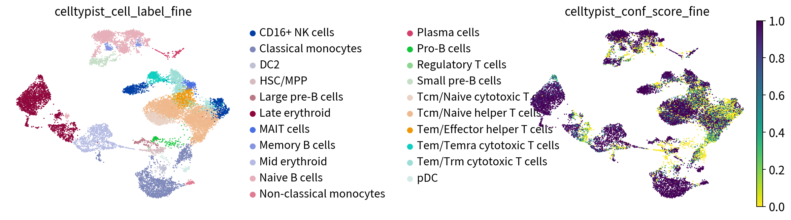
细模型给出更多名称；标签更细不意味着证据更强。对低分区域应回看 marker 和模型训练范围。
读图详解 · 按自己的节奏往下读
粗/细模型输出分别保留，用真实列名区分，不凭文件名推断适配。 左图是 CellTypist 标签，右图是同一细胞的模型评分；一个点仍是一枚细胞。
标签颜色是类别，分数颜色是连续量，不能把颜色数量看成真实已验证类型数。
先检查模型物种/组织和标签粒度，再看低分区域及手工/自动交叉表，定位不一致群体的 marker。
细模型给出更多名称；标签更细不意味着证据更强。对低分区域应回看 marker 和模型训练范围。
模型可能不包含本数据的真实类型；分数不是校准后的正确概率。自动预测不能成为无条件真值。
两轴为当前 UMAP 坐标，右色条是模型输出的 conf_score，通常在 0–1；它没有 UMI 单位。
标签颜色是类别，分数颜色是连续量，不能把颜色数量看成真实已验证类型数。
先检查模型物种/组织和标签粒度，再看低分区域及手工/自动交叉表，定位不一致群体的 marker。
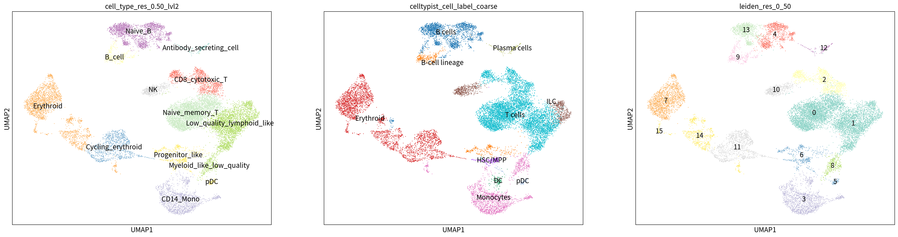
三种标签共享同一 UMAP 布局，适合定位意见不一致的群体；最终报告采用哪一列需基于实际证据与用户确认。
读图详解 · 按自己的节奏往下读
从当前邻居图计算 UMAP；随机种子、PC 与邻居设置都影响布局。 每个点是一枚细胞，相近表示在本次低维嵌入中相近；颜色表示标题列的分组或数值。
UMAP1/UMAP2 是二维嵌入坐标，没有浓度、细胞数或时间单位。坐标正负与原点没有固定生物学含义。
离散标签看分类图例，连续指标看色条。多面板可用不同颜色编码同一批坐标。
先查点代表的对象和标题，再看群体内部混合及边缘，最后回到 marker 和 QC 表检验看似分开的群体。
三种标签共享同一 UMAP 布局，适合定位意见不一致的群体；最终报告采用哪一列需基于实际证据与用户确认。
远处两团之间的距离和空白不直接量化谱系距离；图形旋转、压缩、朝向不代表生物学反转。
UMAP1/UMAP2 是二维嵌入坐标，没有浓度、细胞数或时间单位。坐标正负与原点没有固定生物学含义。
离散标签看分类图例，连续指标看色条。多面板可用不同颜色编码同一批坐标。
先查点代表的对象和标题，再看群体内部混合及边缘，最后回到 marker 和 QC 表检验看似分开的群体。
交叉表每格是同时获得对应手工与自动标签的细胞数。粗细名称不完全对应，不能直接将非对角线都算错误。例如 B-cell lineage 与 B cells 之间可能存在模型粒度差别，应回到 marker 与训练标签说明检查。
模型分数不等于校准正确率；低分提示需要核对，高分也可能是模型面对域外数据的自信错误。手工与模型列都保留，用户确认最终报告使用的实际列名，不让程序默默替换手工标签。
分数并非校准后的正确概率，模型可能缺少本数据的真实类型。
12
报告不是把所有图片排进 Word 就结束。每章应有目的、方法、实际结果与解释，并区分观察、推断和局限。路线选择、模型来源和未定群体也应能追溯，读者才知道结论在什么条件下成立。
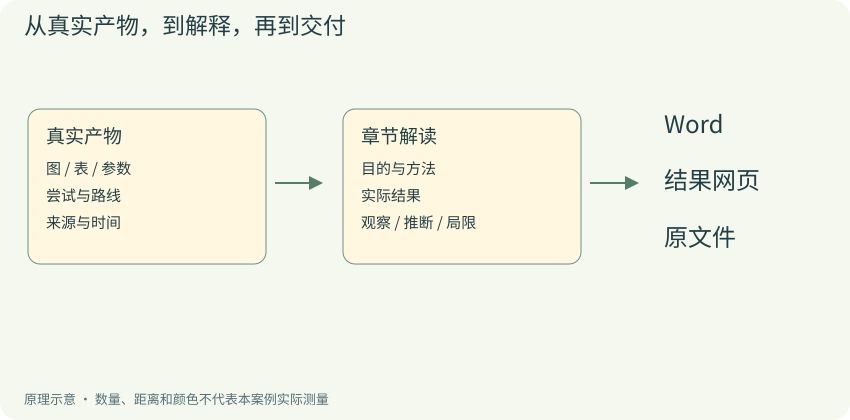
小屏可横向查看，也可放大阅读。
每段解读绑定当前尝试和图表，更新后要检查是否仍有效。
左边的图、表和参数一起支持文字解释，随后输出 Word 和网页。单独换一个字号不等于改变科学内容，但更换过滤、聚类或注释会影响下游。固定海岛教程另存快照，不会随某个研究项目刷新。
历史汇总保留 17,041 个细胞、23,427 个基因以及 counts/log1p 层。sample_celltype_counts 按样本与最终标签汇总；总数应与对象一致。细胞组成比例是当前捕获和过滤范围的描述，不自动等于原组织的真实绝对比例。
先读当前 run/summary、表格和实际图片，再写解读。review 更新本章内容，report 合成 Word 与 Markdown。旧解释如果对应旧尝试、旧图或旧科学表格，不能继续当新结果；网页也要显示它需要更新。
字号、边距、图例位置属于展示调整，可从检查点重绘，保留脚本与旧图。过滤、基因集合、聚类和注释变化影响科学内容，应按依赖顺序重新运行。即使只重绘，也要实际打开图片确认没有裁切、颜色误配和标签错误，再更新解读。
Word 适合阶段交付；结果网页适合按步骤和图形探索当前项目；海岛教程适合学习固定案例的原理。它们互相补充，但教程不会自动变成新项目的报告。网页每次刷新读取真实输出，未完成或过期状态必须可见。
科学参数变化需要重算依赖结果；排版重绘也需核对新图并更新报告解释。
E01
10x H5 将矩阵与 feature/barcode 信息装进一个容器；MTX 常以 matrix、features、barcodes 多文件配合；H5AD 是 AnnData 对象，可能已经处理。格式只是封装方式，不能证明内部数值是原始 counts。
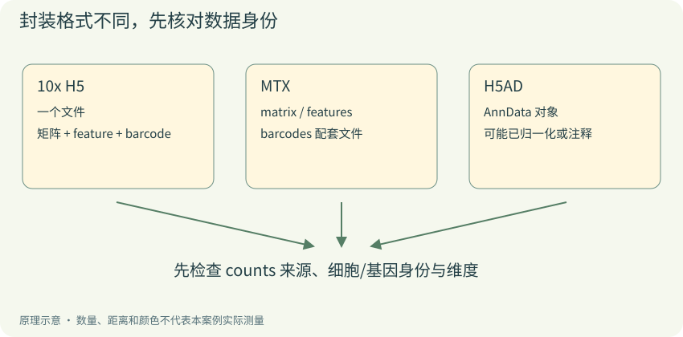
小屏可横向查看，也可放大阅读。
历史 E01 导入后为 16,102 个细胞、33,538 个基因，与 H5 主线不同。这里演示导入与对象检查，不重复跑完整分析，也不拿它冒充主线的另一格式复算。
在资料馆打开对象说明与课件，练习指出 X、obs、var、layers、obsm、obsp 和 uns 各自承担什么。先查看维度和来源，再尝试切片；切片后 copy 与原对象的关系也要分清。
scVI 使用概率模型学习低维表示，需要核对输入计数、批次设计、模型假设和额外环境。现有选修代码可供学习，但本历史案例没有相应运行结果，因此不提供虚构性能比较或结论。
创建自己的练习项目，读 99 指南，由 AI 检查输入、逐章计算，在关键点用真实结果讨论。你可以请 AI 解释一张具体图，也可以调整排版后复核更新；每次讨论都应回到当前项目的证据。
格式不决定样本身份；本例 MTX 演示与主线 H5 的细胞数不同，不能当作同一矩阵复算。
细胞与实验
single-cell RNA sequencing
分别记录不同细胞中检测到的 RNA 信号，用于观察细胞间差异。
本例把骨髓中不同细胞排为矩阵的不同记录。
连接计数、聚类和类型注释。
观测不到某 RNA 不等于该细胞绝不会表达。
也可这样查：单细胞转录组、single-cell RNA sequencing
细胞与实验
gene
具有生物学功能的一段遗传信息，可产生 RNA 等产物。
MS4A1 是本课检查 B 系线索的一个基因。
作为表达矩阵的特征。
一个基因不只服务一种细胞或一种功能。
也可这样查：基因、gene
细胞与实验
transcript
由转录产生的 RNA 形式，同一基因可能对应多个转录本。
基因表达汇总可包含来自不同转录本的信号。
理解测序信号与基因计数的关系。
基因计数通常不等于已经分清所有异构体。
也可这样查：转录本、transcript
细胞与实验
ribonucleic acid · 常用缩写／字段：RNA
由转录产生并参与多种生物过程的核酸，丰度由生成和降解共同决定。
相同细胞类型在不同状态可有不同 RNA 丰度。
本课测量对象的分子基础。
RNA 丰度不能直接当蛋白量或瞬时转录速率。
也可这样查：RNA、ribonucleic acid
细胞与实验
deoxyribonucleic acid · 常用缩写／字段：DNA
保存遗传信息的核酸，为许多 RNA 的产生提供模板。
barcode 插画中的细胞包含遗传信息，但本课输入不是 DNA 变异表。
理解转录与测序的起点。
scRNA 计数不是 DNA 拷贝数测量。
也可这样查：DNA、deoxyribonucleic acid
细胞与实验
sample
按实验设计取得并记录身份的一份材料。
s1d1 与 s1d3 是两个输入样本标签。
核对来源、分组和组成。
样本名不能自动透露疾病、处理或供体关系。
也可这样查：样本、sample
细胞与实验
biological replicate
能够代表目标生物变异的独立实验单位，具体独立性由设计决定。
不同独立供体可为条件比较提供重复。
限制条件效应推断范围。
同一供体的一万枚细胞不是一万个独立供体。
也可这样查：生物学重复、biological replicate
细胞与实验
technical batch
由建库、平台或处理时间等技术条件形成的分组。
不同捕获批次可能改变表达测量。
判断是否需要整合。
不能把任何样本差别都称为技术批次。
也可这样查：技术批次、technical batch
细胞与实验
capture library
一次细胞捕获及相应建库单位，需要用实验记录确认。
Scrublet 应按真实 capture_library 核对。
定义双细胞检测的运行范围。
拆分的测序 lane 不一定是不同捕获。
也可这样查：捕获文库、capture library
细胞与实验
cell barcode · 常用缩写／字段：barcode
用于把测序信号归到捕获单位的序列标签。
来自不同文库的同一条码字符串可能重复。
标记矩阵行来源。
条码不是天然跨样本唯一身份，也不保证一个条码只有一个细胞。
也可这样查：barcode、cell barcode
细胞与实验
unique molecular identifier · 常用缩写／字段：UMI
分子标签，用于区分原始分子与扩增产生的重复信号。
同一个分子的多次 PCR 扩增不应简单数成多个原始分子。
理解原始 counts 的计数口径。
UMI 数不是细胞内全部真实 RNA 的绝对数量。
也可这样查：UMI、unique molecular identifier
细胞与实验
polymerase chain reaction · 常用缩写／字段：PCR
扩增核酸的方法，可以让少量分子产生许多拷贝供测序。
同一 RNA 对应 cDNA 扩增后有许多 reads。
理解 UMI 去重的必要性。
reads 数不能无条件等同于原始分子数。
也可这样查：PCR、polymerase chain reaction
细胞与实验
sequencing reads · 常用缩写／字段：reads
测序仪读出的序列片段观测，需经上游处理才得到表达计数。
本课从 counts 起步，没有重新进行 FASTQ 比对。
说明分析输入的上游来源。
一个 read 不等于一个完整转录本或一个细胞。
也可这样查：reads、sequencing reads
细胞与实验
erythroid lineage
与红细胞生成相关的细胞谱系及阶段。
骨髓中 HBA1/HBB 等信号可来自真实红系群体。
解释组织特异的 marker 与 QC。
高血红蛋白比例不能一律当污染。
也可这样查：红系、erythroid lineage
细胞与实验
myeloid lineage
造血系统中一组包含单核等类型的谱系范畴，需结合具体定义。
LYZ、FCN1 等可支持本例某些髓系群体线索。
辅助粗谱系注释。
一个髓系 marker 阳性不保证准确细类型。
也可这样查：髓系、myeloid lineage
细胞与实验
lymphoid lineage
包含 B、T、NK 等相关群体的谱系范畴。
粗粒度免疫群可能混合多个淋巴类型。
理解粗细标签差别。
共享细胞毒程序不等于完全相同细胞身份。
也可这样查：淋巴系、lymphoid lineage
细胞与实验
cell state
细胞在激活、增殖、应激等方面的动态特征。
MKI67 相关信号可提示增殖状态。
避免把所有细分群都当新类型。
状态变化与类型差异可能同时存在。
也可这样查：细胞状态、cell state
矩阵与表达
annotated data matrix · 常用缩写／字段：AnnData
把表达矩阵、细胞和基因注释及分析结果一起组织的对象。
X 配 obs、var，另存 layers 与低维坐标。
贯穿本课检查点。
对象名字不保证内部数值来自同一处理阶段。
也可这样查：AnnData、annotated data matrix
矩阵与表达
count matrix · 常用缩写／字段：counts
明确来源的计数矩阵，本例主要是 UMI 观测计数。
counts 层保留用于需计数输入的方法。
追溯原始数值。
整数数值本身不足以证明是未经处理的原始计数。
也可这样查：counts、count matrix
矩阵与表达
AnnData.X · 常用缩写／字段：X
AnnData 当前主表达矩阵，通常行细胞、列基因。
归一化前后 X 的数值含义可能改变。
理解方法默认读取哪里。
X 不是固定等于原始 counts。
也可这样查：X、AnnData.X
矩阵与表达
observation annotations · 常用缩写／字段：obs
与每个细胞一一对齐的注释表。
samples、QC、Leiden 和 cell_type 列存于 obs。
记录细胞身份与结果。
不能把 obs 行当基因。
也可这样查：obs、observation annotations
矩阵与表达
variable annotations · 常用缩写／字段：var
与每个基因或特征对齐的注释表。
highly_variable 和 mt 标记在 var 中。
标记特征属性。
基因符号与稳定 ID 不能随意混用。
也可这样查：var、variable annotations
矩阵与表达
expression layers · 常用缩写／字段：layers
保存与 X 同形状的不同表达矩阵。
counts、log1p、scaled 表示不同数值口径。
按方法选择正确输入。
层名是约定，仍需核对实际内容。
也可这样查：layers、expression layers
矩阵与表达
AnnData.raw · 常用缩写／字段：raw
保存表达与特征的一份快照容器。
别人给的 H5AD 的 raw 可能已经 log1p。
追溯数据处理。
名字 raw 不保证原始计数。
也可这样查：raw、AnnData.raw
矩阵与表达
multidimensional observation arrays · 常用缩写／字段：obsm
每个细胞的多维表示。
X_pca 和 X_umap 存储低维坐标。
绘图与邻居计算。
其列不再是原始基因。
也可这样查：obsm、multidimensional observation arrays
矩阵与表达
pairwise observation arrays · 常用缩写／字段：obsp
记录细胞之间成对关系的矩阵容器。
distances 和 connectivities 可表示邻居图。
把局部关系交给聚类与 UMAP。
图权重不是原始表达量。
也可这样查：obsp、pairwise observation arrays
矩阵与表达
unstructured annotations · 常用缩写／字段：uns
存放不必逐细胞或逐基因对齐的结果。
颜色、参数、dendrogram 等信息可保存在 uns。
追溯绘图和分析设置。
不是所有数据都能根据 uns 名称直接解释。
也可这样查：uns、unstructured annotations
矩阵与表达
sparse matrix
主要存储非零元素及其位置，减少大量零的存储成本。
单细胞计数常以稀疏格式保存。
理解数据规模与切片。
稀疏存储并非删除零对应的细胞或基因。
也可这样查：稀疏矩阵、sparse matrix
矩阵与表达
AnnData HDF5 file · 常用缩写／字段：H5AD
保存 AnnData 的文件格式。
checkpoint.h5ad 保存某章对象。
恢复分析阶段。
后缀不保证对象已质控或有原始 counts。
也可这样查：H5AD、AnnData HDF5 file
矩阵与表达
Matrix Market format · 常用缩写／字段：MTX
以坐标或矩阵形式记录数值的交换格式，10x 输入需搭配基因与条码文件。
E01 导入 matrix/features/barcodes。
练习另一种导入方式。
格式相同不代表数据来自同一样本。
也可这样查：MTX、Matrix Market format
矩阵与表达
normalization
按明确规则调整数值尺度，让某些规模因素更可比。
本例每细胞缩放到总 counts 中位数 5853。
处理细胞规模差异。
不等于恢复绝对 RNA 数量或消除所有技术误差。
也可这样查：归一化、normalization
矩阵与表达
natural logarithm of one plus x · 常用缩写／字段：log1p
计算自然对数 log(1+x)，允许零值并压缩大数跨度。
缩放后的 58.53 变成约 4.086。
本课表达探索与检验层。
log1p 不保证数据服从正态分布，也不是默认 log2。
也可这样查：log1p、natural logarithm of one plus x
矩阵与表达
standard score · 常用缩写／字段：z-score
某个值减去该变量均值，再除以标准差。
scaled 层可在红蓝热图中出现负值。
比较同一基因的相对偏离。
负值不是负 counts；不同基因的 z-score 不表示同样绝对表达。
也可这样查：z-score、standard score
矩阵与表达
fraction expressing
一个群内超过给定检出阈值的细胞所占比例。
marker_fraction 表的 0.2 表示 20%。
解释点图大小与特异性。
比例与均值不同；点大不一定颜色深。
也可这样查：表达比例、fraction expressing
矩阵与表达
gene identifier
用于匹配特征的标识，可能是稳定编号或符号。
输入 Ensembl ID 与 marker 符号可能需要可靠映射。
保证数据、marker 和模型匹配。
不能凭相似拼写或编号位置随意映射。
也可这样查：基因 ID、gene identifier
质量与特征
quality control · 常用缩写／字段：QC
检查和处理与数据质量有关的问题，同时记录取舍。
比较 counts、基因数和 mt 分布后选择路线。
建立可信的下游起点。
过滤更多不是质量必然更好。
也可这样查：QC、quality control
质量与特征
total counts per cell · 常用缩写／字段：total_counts
当前计数口径下每细胞所有基因计数之和。
QC 散点图横轴。
观察测序规模与复杂度。
高值可能来自大细胞，也可能来自双细胞。
也可这样查：total_counts、total counts per cell
质量与特征
detected genes per cell · 常用缩写／字段：n_genes_by_counts
每个细胞中检出计数的基因数量。
QC 散点图纵轴。
观察表达复杂度。
不等于测序 reads 数或该细胞理论全部基因数。
也可这样查：n_genes_by_counts、detected genes per cell
质量与特征
mitochondrial count percentage · 常用缩写／字段：pct_counts_mt
线粒体基因计数占总计数的百分数。
20 表示 20%，不是 0.2%。
与其他 QC 指标联合观察。
基因规则需匹配物种，高值不能孤立当细胞死亡证明。
也可这样查：pct_counts_mt、mitochondrial count percentage
质量与特征
ribosomal gene count percentage · 常用缩写／字段：pct_counts_ribo
指定核糖体相关基因集合计数的百分比。
QC 五联小提琴图的一个面板。
观察 RNA 组成。
它不是直接测量核糖体颗粒数量。
也可这样查：pct_counts_ribo、ribosomal gene count percentage
质量与特征
hemoglobin gene count percentage · 常用缩写／字段：pct_counts_hb
所用血红蛋白相关基因集合占总计数的百分比。
骨髓红系群可有较高值。
结合组织与谱系解释 QC。
不能把所有高值细胞当作污染。
也可这样查：pct_counts_hb、hemoglobin gene count percentage
质量与特征
median
排序后位于中间位置的统计量，较少受极端值影响。
历史归一化目标为总 counts 中位数。
定义归一化或稳健中心。
中位数不同于平均数。
也可这样查：中位数、median
质量与特征
median absolute deviation · 常用缩写／字段：MAD
到中位数距离的中位数，描述稳健分散程度。
QC 按若干倍 MAD 标记偏离细胞。
在分样本背景下识别异常。
MAD=0 需要明确处理；规则不是所有数据通用真值。
也可这样查：MAD、median absolute deviation
质量与特征
doublet
一个捕获条码中混合两个细胞信号的情形。
两个谱系 marker 同时突出可成为核查线索。
避免误解混合表达。
共表达不自动证明双细胞，预测有误判。
也可这样查：双细胞、doublet
质量与特征
Scrublet doublet detection · 常用缩写／字段：Scrublet
通过模拟混合表达和邻域比较预测双细胞的方法。
本历史主线给出 213 个预测并保留标记。
生成双细胞证据。
不是直接观察到两枚细胞。
也可这样查：Scrublet、Scrublet doublet detection
质量与特征
doublet score · 常用缩写／字段：doublet_score
Scrublet 输出的连续预测分数。
UMAP 连续色条展示分数高低。
定位需要核对的区域。
不应直接当实验正确概率。
也可这样查：doublet_score、doublet score
质量与特征
predicted doublet label · 常用缩写／字段：predicted_doublet
按算法与阈值产生的 True/False 预测。
历史细胞表保留该布尔列。
比较保留与删除影响。
True 不是实验确认，False 也不保证无混合。
也可这样查：predicted_doublet、predicted doublet label
质量与特征
highly variable genes
相对于表达背景具有较多变异的候选特征。
本例最终选择 2000 个用于结构分析。
降维特征选择。
不是显著差异基因或已验证 marker 的同义词。
也可这样查：高变基因、highly variable genes
质量与特征
dispersion
描述表达相对于平均水平的变异程度的方法统计量。
HVG 图右侧是 dispersions。
控制表达丰度与变异的关系。
不同方法的离散度定义可能不同。
也可这样查：离散度、dispersion
质量与特征
number of batches selecting a gene · 常用缩写／字段：highly_variable_nbatches
一个基因在几个批次或样本中入选高变集合。
本例只有两个样本，可能取 0、1、2。
解释跨样本高变信号。
所有非零值合计不等于最终 2000 基因。
也可这样查：highly_variable_nbatches、number of batches selecting a gene
质量与特征
threshold
按规则区分候选的界限，需要说明单位与比较方向。
mt 百分比上限与最少检出基因数。
控制过滤或展示范围。
阈值不是自然界普适分界，也不能脱离数据照搬。
也可这样查：阈值、threshold
降维与聚类
principal component analysis · 常用缩写／字段：PCA
找出按解释变异排序的线性组合方向。
PC1 本例解释约 19.58% 变异。
构建低维表示。
坐标不是某个基因的表达量。
也可这样查：PCA、principal component analysis
降维与聚类
principal component
多个输入特征的加权组合，可作为观察数据的方向。
PC1/PC2 与 PC3/PC4 展示不同方向。
理解 PCA 坐标和选择。
方向正负没有固定生物学意义。
也可这样查：主成分、principal component
降维与聚类
explained variance ratio · 常用缩写／字段：variance_ratio
某主成分解释的总体变异份额。
前十 PC 在本例合计约 48.60%。
评估降维保留信息。
log=True 图中的负刻度不是负比例。
也可这样查：variance_ratio、explained variance ratio
降维与聚类
nearest-neighbor graph
以细胞为节点，用局部相似关系连接节点的图。
聚类与 UMAP 都依赖所选图。
连接降维与分群。
邻居关系不是实验细胞相互作用证据。
也可这样查：邻居图、nearest-neighbor graph
降维与聚类
uniform manifold approximation and projection · 常用缩写／字段：UMAP
将局部关系映射到低维的可视化与表示方法。
UMAP1/2 每个点是一枚细胞。
探索群体结构。
岛间距离和方向不直接是发育距离或时间。
也可这样查：UMAP、uniform manifold approximation and projection
降维与聚类
t-distributed stochastic neighbor embedding · 常用缩写／字段：t-SNE
强调局部关系的非线性低维嵌入方法。
与 UMAP 的布局轮廓可能不同。
提供另一种观察窗口。
团面积与团间距离不能直接量化群体大小和差异。
也可这样查：t-SNE、t-distributed stochastic neighbor embedding
降维与聚类
Harmony integration · 常用缩写／字段：Harmony
在表示空间处理批次相关结构的方法。
本例调整 PCA 表示后建立候选图。
比较整合路线。
不等于生成校正后的真实原始 counts。
也可这样查：Harmony、Harmony integration
降维与聚类
batch-balanced k-nearest neighbors · 常用缩写／字段：BBKNN
按批次平衡邻居选择来构建图的方法。
本例与 Harmony、未整合并列。
检查批次平衡图。
图混合均匀不保证生物结构保留。
也可这样查：BBKNN、batch-balanced k-nearest neighbors
降维与聚类
Leiden community detection · 常用缩写／字段：Leiden
在图结构上寻找连接更紧密社区的算法。
四个分辨率得到 5、16、25、37 簇。
生成待解释的分组。
社区不是已经命名的细胞类型。
也可这样查：Leiden、Leiden community detection
降维与聚类
clustering resolution
影响聚类粒度的参数，具体作用取决于算法和数据。
0.02 为粗粒度，0.50 更细。
比较可解释尺度。
不是数值越大越好，也不是直接指定簇数。
也可这样查：分辨率、clustering resolution
降维与聚类
cluster
算法在当前参数下划出的一个细胞集合。
leiden_res_0_50 的 0 簇有其实际成员。
组织 marker 和注释证据。
编号跨运行、分辨率不可直接对应。
也可这样查：簇、cluster
降维与聚类
subclustering
在选定细胞群内部进一步研究结构。
粗级 B_cells 提取 2268 枚细胞。
研究局部异质性。
细群不是自动发现的新细胞类型。
也可这样查：子群分析、subclustering
降维与聚类
dendrogram
用分枝展示对象逐步合并的相似性层级。
本例叶端为细粒度标签。
观察类别平均表示相似性。
不是谱系树或发育时间轴。
也可这样查：树状图、dendrogram
降维与聚类
correlation coefficient
衡量两个向量共同变化程度的统计量，需明确使用哪种表示。
类别矩阵色条从 -1 到 1。
比较平均表示模式。
相关不证明因果，也不必然来自原始全基因 counts。
也可这样查：相关系数、correlation coefficient
注释与统计
marker gene · 常用缩写／字段：marker
能为细胞类型或状态提供识别线索的基因。
CD3D/TRAC 支持 T 相关线索。
组合注释证据。
通常没有一个单基因在所有背景下绝对专一。
也可这样查：marker、marker gene
注释与统计
dot plot · 常用缩写／字段：dotplot
用圆点大小与颜色同时编码比例和均值的图。
本课大小看表达比例，颜色可能按基因缩放。
快速比较群体的 marker 模式。
必须核对实际 standard_scale 与图例。
也可这样查：dotplot、dot plot
注释与统计
matrix plot · 常用缩写／字段：matrixplot
用色块展示分组后的基因均值。
蓝色按基因缩放图与红蓝 z-score 图不同。
比较群体平均模式。
每个格子不是一个细胞。
也可这样查：matrixplot、matrix plot
注释与统计
heatmap
用颜色在二维表格中表达数值。
第 07 章常为行细胞列基因，第 10 章交换过方向。
展开表达模式。
不能一律假设行是基因；颜色单位由表达层决定。
也可这样查：热图、heatmap
注释与统计
violin plot
用宽度表示数值分布的密度。
按样本的 QC 小提琴。
看典型范围、长尾和零附近聚集。
图宽不直接等于该组细胞总数。
也可这样查：小提琴图、violin plot
注释与统计
display range scaling · 常用缩写／字段：standard_scale
绘图时将数值按变量或观察单位缩放显示。
var 在本课点图表示按基因在组间缩放到 0–1。
解释颜色相对含义。
不是 z-score，也不是改变原始 counts。
也可这样查：standard_scale、display range scaling
注释与统计
cell-type annotation
结合表达与背景为细胞群赋予生物学标签。
先粗谱系，再谨慎细类型。
把计算分组转成可解释结果。
簇编号不能直接查固定答案表。
也可这样查：细胞注释、cell-type annotation
注释与统计
uncertain identity · 常用缩写／字段：Uncertain
明确保留证据不足或冲突的标签状态。
低质量混合群可以暂不强判。
诚实记录解释边界。
它不是程序失败，也不应为凑齐标签而消除。
也可这样查：Uncertain、uncertain identity
注释与统计
Wilcoxon rank-sum test · 常用缩写／字段：Wilcoxon
依据两组数值的秩来评估分布差异的非参数方法。
本课在 log1p 上做 marker 排名。
生成描述性群间基因线索。
不需要正态不等于没有独立性等假设。
也可这样查：Wilcoxon、Wilcoxon rank-sum test
注释与统计
one group versus all remaining groups · 常用缩写／字段：one-versus-rest
将某群与其余群体合并作为参照比较。
每簇 marker 排名。
明确背景定义。
它不同于指定 B 对 T/NK/ILC。
也可这样查：one-versus-rest、one group versus all remaining groups
注释与统计
approximate log2 fold change · 常用缩写／字段：logfoldchanges
当前实现根据表达口径给出的近似对数倍数变化。
B 对 T/NK/ILC 的 CD74 约 5.025。
描述差异方向与幅度。
不是 p 值，也不表示每个细胞都有相同倍数。
也可这样查：logfoldchanges、approximate log2 fold change
注释与统计
p-value
在检验假设和模型成立时，观察到相同或更极端统计量的概率度量。
pvals 列用于描述统计证据。
与幅度、比例共同阅读。
不是假设为真的概率，也不是效应大小。
也可这样查：p 值、p-value
注释与统计
multiple testing
同时检验许多基因带来的错误发现问题，需要相应控制。
pvals_adj 是校正后的值。
避免只按最小原始 p 值挑结论。
校正不能弥补错误实验设计或伪重复。
也可这样查：多重检验、multiple testing
注释与统计
ranking statistic · 常用缩写／字段：scores
排名检验输出的分数，具体定义与方法有关。
markers_by_cluster 的 Wilcoxon scores。
排序与比较检验证据。
不能解释为表达量或准确率。
也可这样查：scores、ranking statistic
注释与统计
CellTypist annotation · 常用缩写／字段：CellTypist
利用训练模型为细胞提出类型标签的工具。
本例保存粗、细模型标签。
提供独立于手工命名的对照意见。
模型必须核对物种、组织和标签范围。
也可这样查：CellTypist、CellTypist annotation
注释与统计
model confidence score
模型对其输出标签的支持量，含义取决于实现。
conf_score 在 UMAP 连续着色。
定位需要进一步核对的细胞。
不是校准后的正确概率，域外数据也可能高分。
也可这样查：模型分数、model confidence score
注释与统计
contingency table
同时按两套标签统计共同成员数量。
手工 B_cells 与模型 B cells 的交集。
定位一致与不一致群体。
非对角线不必然全是错误，标签粒度可能不同。
也可这样查：交叉表、contingency table
注释与统计
single-cell variational inference · 常用缩写／字段：scVI
用概率生成模型学习单细胞表示的方法框架。
本课作为选修代码入口。
理解其他建模路线。
此历史主线没有运行结果，不能编造性能比较。
也可这样查：scVI、single-cell variational inference
文件与协作
checkpoint
某个明确分析阶段保存的对象，用于恢复与下游读取。
每章 checkpoint.h5ad。
保证阶段衔接。
文件存在不意味着它仍与当前参数一致。
也可这样查：检查点、checkpoint
文件与协作
analysis attempt
某章一次有独立身份的运行及其候选、参数和记录。
fresh 会产生新尝试目录。
区分当前、历史和重跑。
按文件夹日期猜最新版可能选错，应读 state。
也可这样查：尝试、analysis attempt
文件与协作
candidate route
在共同起点计算、尚待比较选择的一种方法结果。
basic、mt、mad 分别保存。
先看结果再做判断。
候选存在不表示已被确认成为下游主对象。
也可这样查：候选路线、candidate route
文件与协作
stale result · 常用缩写／字段：stale
输入、代码、参数或上游变化后，旧结果不再代表当前分析。
改聚类后旧注释需要更新。
提醒重新计算与解读。
旧文件仍能打开不等于有效。
也可这样查：stale、stale result
文件与协作
SHA-256 content digest · 常用缩写／字段：SHA256
根据文件字节计算的摘要，用于检查内容是否变化。
复制原图前后摘要一致。
追溯素材和检测更新。
摘要一致不能证明科学结论正确。
也可这样查：SHA256、SHA-256 content digest
文件与协作
Conda environment manager · 常用缩写／字段：Conda
创建并管理软件环境及依赖的工具。
项目环境首次在最终路径初始化。
提高运行可复现性。
拷贝已初始化环境目录不保证跨系统可用。
也可这样查：Conda、Conda environment manager
文件与协作
Jupyter Notebook · 常用缩写／字段：Notebook
包含代码、说明与可保存输出的课件文档。
00–12 逐章课件。
同时学习目的和实现。
打开网页阅读源码不会执行单元格。
也可这样查：Notebook、Jupyter Notebook
文件与协作
figure redraw
在明确检查点上调整展示并重新导出图片。
修改字号和图例位置。
改善阅读与报告排版。
修改过滤阈值或注释不只是重绘。
也可这样查：重绘、figure redraw
文件与协作
pseudoreplication
把有依赖的观察当作独立重复而夸大证据的做法。
把同供体细胞当作独立供体。
检查条件效应推断。
细胞数多不能自动解决重复单位错误。
也可这样查：伪重复、pseudoreplication